Code
# The datafile "rawdata_VetRepos.csv" contains METADATA on gender and university
data1 <- read.csv(
file = "rawdata_VetRepos.csv",
header=T,
dec = '.',
stringsAsFactors = T
)
n_iterations1 = 1000
n_iterations2 = 2000Antti Iivanainen
June 5, 2024
This html document contains the annotated script and copies of the tables and figures in the paper. The figures for the paper were exported as svg files and polished using Inkscape. The csv tables were loaded to excel, formatted and copied to the manuscript file for final polishing. Supplementary Tables 2A and 2B were exported as pdf files.
The anonymized input data have been deposited to the Finnish Social Science Data Archive https://urn.fi/urn:nbn:fi:fsd:T-FSD3873. The data do not include information on the gender or the university of the participants. Therefore a good number of the analyses won’t run. These chunks are indicated by red-colored text. Alongside of this html document, a pdf copy of the script is available from figshare at https://dx.doi.org/10.6084/m9.figshare.25470436.
Rendering of the html document was done using Quarto.
The script relies on the following packages. Please ensure that they are installed in your system.
boot
corrplot
dplyr
dunn.test
effectsize
GGally
ggExtra
ggplot2
GPArotation
gt
kableExtra
knitr
lavaan
lattice
latticeExtra
mirt
patchwork
psych
psychTools
rmarkdown
rsvg
semPlot
semTools
statsThe public anonymous data file (anonymous_data_VetRepos.csv) does not contain university and gender information.
# The datafile "rawdata_VetRepos.csv" contains METADATA on gender and university
data1 <- read.csv(
file = "rawdata_VetRepos.csv",
header=T,
dec = '.',
stringsAsFactors = T
)
n_iterations1 = 1000
n_iterations2 = 2000scale_deep <- paste("deep_", 1:4, sep ='')
scale_unreflective4 <- paste("unreflective_", 1:4, sep ='')
scale_unreflective3 <- paste("unreflective_", 1:3, sep ='')
scale_cynicism <- paste("cynicism_", 1:3, sep = '')
scale_exhaustion <- paste("exhaustion_", 1:4, sep = '')
scale_inadequacy <- paste("inadequacy_", 1:2, sep = '')
scale_all <- c(
scale_deep,
scale_unreflective4,
scale_cynicism,
scale_exhaustion,
scale_inadequacy
)
# divide score by 100 to align variance with the other observed variables
data1["score_div100"] <- data1["vetrepos_score"]/100
# raw sumscores
data1["raw_deep"] <- apply(data1[paste("deep_", 1:4, sep ='')], 1, sum)
data1["raw_unreflective4"] <- apply( # all four indicators
data1[paste("unreflective_", 1:4, sep ='')], 1, sum
)
data1["raw_unreflective3"] <- apply( # indicators 1, 2 and 3
data1[paste("unreflective_", 1:3, sep ='')], 1, sum
)
data1["raw_unreflective"] <- data1["raw_unreflective3"]
data1["raw_cynicism"] <- apply(data1[paste("cynicism_", 1:3, sep = '')], 1, sum)
data1["raw_exhaustion"] <- apply(data1[paste("exhaustion_", 1:4, sep = '')], 1, sum)
data1["raw_inadequacy"] <- apply(data1[paste("inadequacy_", 1:2, sep = '')], 1, sum)
data1["raw_burnout"] <- apply(
data1[,c("raw_cynicism", "raw_exhaustion", "raw_inadequacy")],
1,
sum
)
# Assign everything to raw_data and describe
raw_data <- data1
kbl(round(describe(raw_data),2))| vars | n | mean | sd | median | trimmed | mad | min | max | range | skew | kurtosis | se | |
|---|---|---|---|---|---|---|---|---|---|---|---|---|---|
| university* | 1 | 248 | 4.49 | 2.08 | 6.00 | 4.60 | 1.48 | 1.0 | 7 | 6.0 | -0.47 | -1.35 | 0.13 |
| gender | 2 | 248 | 1.89 | 0.34 | 2.00 | 1.98 | 0.00 | 1.0 | 3 | 2.0 | -1.84 | 3.67 | 0.02 |
| study_year | 3 | 248 | 2.88 | 1.49 | 3.00 | 2.77 | 1.48 | 1.0 | 6 | 5.0 | 0.50 | -0.80 | 0.09 |
| vetrepos_score | 4 | 248 | 507.48 | 92.51 | 508.00 | 507.16 | 103.04 | 290.0 | 700 | 410.0 | 0.03 | -0.75 | 5.87 |
| deep_1 | 5 | 248 | 2.19 | 0.78 | 2.00 | 2.24 | 1.48 | 0.0 | 4 | 4.0 | -0.35 | 0.01 | 0.05 |
| deep_2 | 6 | 248 | 2.22 | 0.87 | 2.00 | 2.25 | 1.48 | 0.0 | 4 | 4.0 | -0.29 | -0.67 | 0.06 |
| deep_3 | 7 | 248 | 2.76 | 0.76 | 3.00 | 2.79 | 0.00 | 0.0 | 4 | 4.0 | -0.71 | 0.67 | 0.05 |
| deep_4 | 8 | 248 | 2.77 | 0.74 | 3.00 | 2.80 | 0.00 | 0.0 | 4 | 4.0 | -0.73 | 0.85 | 0.05 |
| unreflective_1 | 9 | 248 | 1.57 | 0.95 | 1.00 | 1.58 | 1.48 | 0.0 | 4 | 4.0 | 0.19 | -0.88 | 0.06 |
| unreflective_2 | 10 | 248 | 1.53 | 0.94 | 1.00 | 1.53 | 1.48 | 0.0 | 4 | 4.0 | 0.38 | -0.60 | 0.06 |
| unreflective_3 | 11 | 248 | 1.17 | 0.84 | 1.00 | 1.10 | 0.00 | 0.0 | 4 | 4.0 | 0.68 | 0.30 | 0.05 |
| unreflective_4 | 12 | 248 | 2.87 | 0.81 | 3.00 | 2.94 | 0.00 | 0.0 | 4 | 4.0 | -0.91 | 1.13 | 0.05 |
| cynicism_1 | 13 | 248 | 1.54 | 1.04 | 1.00 | 1.51 | 1.48 | 0.0 | 4 | 4.0 | 0.22 | -0.74 | 0.07 |
| cynicism_2 | 14 | 248 | 1.01 | 1.03 | 1.00 | 0.88 | 1.48 | 0.0 | 4 | 4.0 | 0.85 | -0.15 | 0.07 |
| cynicism_3 | 15 | 248 | 0.94 | 1.04 | 1.00 | 0.79 | 1.48 | 0.0 | 4 | 4.0 | 0.87 | -0.30 | 0.07 |
| exhaustion_1 | 16 | 248 | 2.40 | 0.99 | 3.00 | 2.43 | 1.48 | 0.0 | 4 | 4.0 | -0.50 | -0.39 | 0.06 |
| exhaustion_2 | 17 | 248 | 1.52 | 1.23 | 1.00 | 1.46 | 1.48 | 0.0 | 4 | 4.0 | 0.36 | -1.03 | 0.08 |
| exhaustion_3 | 18 | 248 | 2.19 | 1.00 | 2.00 | 2.19 | 1.48 | 0.0 | 4 | 4.0 | -0.16 | -0.64 | 0.06 |
| exhaustion_4 | 19 | 248 | 1.61 | 1.14 | 1.00 | 1.59 | 1.48 | 0.0 | 4 | 4.0 | 0.20 | -0.97 | 0.07 |
| inadequacy_1 | 20 | 248 | 1.96 | 1.10 | 2.00 | 1.99 | 1.48 | 0.0 | 4 | 4.0 | -0.07 | -0.88 | 0.07 |
| inadequacy_2 | 21 | 248 | 1.75 | 1.15 | 2.00 | 1.76 | 1.48 | 0.0 | 4 | 4.0 | 0.10 | -1.05 | 0.07 |
| score_div100 | 22 | 248 | 5.07 | 0.93 | 5.08 | 5.07 | 1.03 | 2.9 | 7 | 4.1 | 0.03 | -0.75 | 0.06 |
| raw_deep | 23 | 248 | 9.94 | 2.33 | 10.00 | 10.02 | 1.48 | 0.0 | 16 | 16.0 | -0.52 | 1.08 | 0.15 |
| raw_unreflective4 | 24 | 248 | 7.13 | 2.40 | 7.00 | 7.08 | 2.97 | 1.0 | 14 | 13.0 | 0.23 | -0.26 | 0.15 |
| raw_unreflective3 | 25 | 248 | 4.27 | 2.09 | 4.00 | 4.20 | 1.48 | 0.0 | 11 | 11.0 | 0.40 | -0.16 | 0.13 |
| raw_unreflective | 26 | 248 | 4.27 | 2.09 | 4.00 | 4.20 | 1.48 | 0.0 | 11 | 11.0 | 0.40 | -0.16 | 0.13 |
| raw_cynicism | 27 | 248 | 3.48 | 2.64 | 3.00 | 3.29 | 2.97 | 0.0 | 12 | 12.0 | 0.60 | -0.13 | 0.17 |
| raw_exhaustion | 28 | 248 | 7.72 | 3.26 | 8.00 | 7.70 | 2.97 | 1.0 | 16 | 15.0 | 0.10 | -0.55 | 0.21 |
| raw_inadequacy | 29 | 248 | 3.71 | 1.87 | 4.00 | 3.73 | 2.97 | 0.0 | 8 | 8.0 | 0.02 | -0.76 | 0.12 |
| raw_burnout | 30 | 248 | 14.92 | 6.33 | 15.00 | 14.84 | 5.93 | 1.0 | 34 | 33.0 | 0.12 | -0.39 | 0.40 |
# measurement model
m_measurement = '
f_deep =~ deep_1 + deep_2 + deep_3 + deep_4
f_unreflective =~ unreflective_1 + unreflective_2 + unreflective_3
f_cynicism =~ cynicism_1 + cynicism_2 + cynicism_3
f_exhaustion =~ exhaustion_1 + exhaustion_2 + exhaustion_3 + exhaustion_4
'
# full structural equation model
m_full_SEM <- '
# measurement model
f_deep =~ deep_1 + deep_2 + deep_3 + deep_4
f_unreflective =~ unreflective_1 + unreflective_2 + unreflective_3
f_cynicism =~ cynicism_1 + cynicism_2 + cynicism_3
f_exhaustion =~ exhaustion_1 + exhaustion_2 + exhaustion_3 + exhaustion_4
# regressions
score_div100 ~ f_deep + study_year + f_unreflective + f_cynicism + f_exhaustion
# covariances
f_cynicism ~~ f_exhaustion
f_unreflective ~~ f_cynicism + f_exhaustion + f_deep
'
# full SEM with covariance term cynicism_1~~exhaustion_1
m_full_SEM_cov <- '
# measurement model
f_deep =~ deep_1 + deep_2 + deep_3 + deep_4
f_unreflective =~ unreflective_1 + unreflective_2 + unreflective_3
f_cynicism =~ cynicism_1 + cynicism_2 + cynicism_3
f_exhaustion =~ exhaustion_1 + exhaustion_2 + exhaustion_3 + exhaustion_4
# regressions
score_div100 ~ f_deep + study_year + f_unreflective + f_cynicism + f_exhaustion
# covariances
f_cynicism ~~ f_exhaustion
f_unreflective ~~ f_cynicism + f_exhaustion + f_deep
cynicism_1 ~~ exhaustion_1
'
# models for assessing measurement invariance
m_constrained_syear <- '
# measurement model
f_deep =~ deep_1 + deep_2 + deep_3 + deep_4
f_unreflective =~ unreflective_1 + unreflective_2 + unreflective_3
f_cynicism =~ cynicism_1 + cynicism_2 + cynicism_3
f_exhaustion =~ exhaustion_1 + exhaustion_2 + exhaustion_3 + exhaustion_4
# regressions
score_div100 ~ f_deep + study_year + f_unreflective + f_cynicism + f_exhaustion
# mimic regressions
f_deep ~ 0*study_year
f_unreflective ~ 0*study_year
f_cynicism ~ 0*study_year
f_exhaustion ~ 0*study_year
# covariances
f_cynicism ~~ f_exhaustion
f_unreflective ~~ f_cynicism + f_exhaustion + f_deep
'
m_unconstrained_syear <- '
# measurement model
f_deep =~ deep_1 + deep_2 + deep_3 + deep_4
f_unreflective =~ unreflective_1 + unreflective_2 + unreflective_3
f_cynicism =~ cynicism_1 + cynicism_2 + cynicism_3
f_exhaustion =~ exhaustion_1 + exhaustion_2 + exhaustion_3 + exhaustion_4
# regressions
score_div100 ~ f_deep + study_year + f_unreflective + f_cynicism + f_exhaustion
# mimic regressions
f_deep ~ study_year
f_unreflective ~ study_year
f_cynicism ~ study_year
f_exhaustion ~ study_year
# covariances
f_cynicism ~~ f_exhaustion
f_unreflective ~~ f_cynicism + f_exhaustion + f_deep
'
m_constrained_gender <- '
# measurement model
f_deep =~ deep_1 + deep_2 + deep_3 + deep_4
f_unreflective =~ unreflective_1 + unreflective_2 + unreflective_3
f_cynicism =~ cynicism_1 + cynicism_2 + cynicism_3
f_exhaustion =~ exhaustion_1 + exhaustion_2 + exhaustion_3 + exhaustion_4
# regressions
score_div100 ~ f_deep + study_year + f_unreflective + f_cynicism + f_exhaustion
# mimic regressions
f_deep ~ 0*gender
f_unreflective ~ 0*gender
f_cynicism ~ 0*gender
f_exhaustion ~ 0*gender
# covariances
f_cynicism ~~ f_exhaustion
f_unreflective ~~ f_cynicism + f_exhaustion + f_deep
'
m_unconstrained_gender <- '
# measurement model
f_deep =~ deep_1 + deep_2 + deep_3 + deep_4
f_unreflective =~ unreflective_1 + unreflective_2 + unreflective_3
f_cynicism =~ cynicism_1 + cynicism_2 + cynicism_3
f_exhaustion =~ exhaustion_1 + exhaustion_2 + exhaustion_3 + exhaustion_4
# regressions
score_div100 ~ f_deep + study_year + f_unreflective + f_cynicism + f_exhaustion
# mimic regressions
f_deep ~ gender
f_unreflective ~ gender
f_cynicism ~ gender
f_exhaustion ~ gender
# covariances
f_cynicism ~~ f_exhaustion
f_unreflective ~~ f_cynicism + f_exhaustion + f_deep
'The goal is to control the effect of university F. University E is removed to avoid introducing an overly strong emphasis on its five students.
The following code chunk won’t run on anonymous data.
# raw data exluding university E
data_wt <- subset(raw_data, university != 'E')
data_wt$university <- factor(
data_wt$university,
levels = c('A', 'B', 'C', 'D', 'F', 'G')
)
# Calculate weights as the ratio of desired to observed proportions
group_table <- table(data_wt$university)
desired_proportions <- rep(
1/length(levels(data_wt$university)),
length(levels(data_wt$university))
)
weights <- desired_proportions / (group_table / sum(group_table))
data_wt$weights <- as.numeric(weights[as.character(data_wt$university)])
table_weights <- data.frame(cbind(
count = table(data_wt$university),
weights)
)
table_weights["weighted count"] <- with(table_weights, count*weights)
table_weights <- rbind(table_weights, sum = apply(table_weights, 2, sum))
kbl(
round(table_weights,2),
caption = "Weights per university",
) | count | weights | weighted count | |
|---|---|---|---|
| A | 31 | 1.31 | 40.5 |
| B | 32 | 1.27 | 40.5 |
| C | 27 | 1.50 | 40.5 |
| D | 18 | 2.25 | 40.5 |
| F | 105 | 0.39 | 40.5 |
| G | 30 | 1.35 | 40.5 |
| sum | 243 | 8.06 | 243.0 |
# global fit indices
global_fit_stats <- c(
'rmsea.robust',
'cfi.robust',
'tli.scaled',
'srmr'
)
### unweighted complete data
# measurement model, CFA
fit_measurement <- cfa(
model = m_measurement,
data = raw_data,
estimator = 'MLM',
std.lv=T,
fixed.x = 'default')
# exact-fit test
fitMeasures(fit_measurement, c("chisq.scaled", "df.scaled", "pvalue.scaled")) chisq.scaled df.scaled pvalue.scaled
113.622 71.000 0.001 chisq.scaled df.scaled pvalue.scaled
148.202 95.000 0.000 # pvalue
fit_fullSEM@test$satorra.bentler$pvalue # 0.0003948651[1] 0.0003948651# full structural equation model with covariance term cynicism_1~~exhaustion_1
set.seed(1234)
fit_fullSEM_cov <- sem(
model = m_full_SEM_cov, # full structural equation model
data = raw_data,
std.ov = T,
mimic = 'lavaan',
estimator = "MLM",
fixed.x = 'default'
)
# exact-fit test
fitMeasures(fit_fullSEM_cov, c("chisq.scaled", "df.scaled", "pvalue.scaled")) # pvalue chisq.scaled df.scaled pvalue.scaled
131.806 94.000 0.006 fit_fullSEM_cov@test$satorra.bentler$pvalue [1] 0.00615839# comparison between fit_fullSEM and fit_fullSEM_cov
delta_cov_fit <- lavTestLRT(fit_fullSEM, fit_fullSEM_cov)
delta_chiq <- delta_cov_fit[2, 'Chisq'] - delta_cov_fit[1, 'Chisq']
pval <- pchisq(delta_chiq, 4, lower.tail = F)
delta_cov_fit[2, 'Chisq diff'] <- delta_chiq
delta_cov_fit[2, 'Pr(>Chisq)'] <- pval
delta_cov_fit # model comparison fit_fullSEM vs. fit_fullSEM_cov| Df | AIC | BIC | Chisq | Chisq diff | Df diff | Pr(>Chisq) | |
|---|---|---|---|---|---|---|---|
| fit_fullSEM_cov | 94 | 7332.042 | 7476.092 | 141.4301 | NA | NA | NA |
| fit_fullSEM | 95 | 7347.718 | 7488.255 | 159.1060 | 17.67591 | 1 | 0.0014277 |
The following code chunks won’t run on anonymous data.
### weighted data
# measurement model, weighted data excluding university E
set.seed(1234)
fit_weighted_measurement <- cfa(
model = m_measurement,
data = data_wt, # raw_data without university E
sampling.weights = "weights", # weight matrix
estimator = 'MLM',
std.lv=T,
fixed.x = 'default')
# exact-fit test
fitMeasures(fit_weighted_measurement, c("chisq.scaled", "df.scaled", "pvalue.scaled")) chisq.scaled df.scaled pvalue.scaled
124.966 71.000 0.000 # pvalue
fit_weighted_measurement@test$satorra.bentler$pvalue [1] 8.118573e-05# full SE model with weight matrix but without university E
set.seed(1234)
fit_weighted_fullSEM <- sem(
model = m_full_SEM, # full structural equation model
data = data_wt,
sampling.weights = "weights",
std.ov = T,
mimic = 'lavaan',
estimator = "MLM",
fixed.x = 'default'
)
# exact-fit test
fitMeasures(fit_weighted_fullSEM, c("chisq.scaled", "df.scaled", "pvalue.scaled")) chisq.scaled df.scaled pvalue.scaled
147.914 95.000 0.000 # pvalue
fit_weighted_fullSEM@test$satorra.bentler$pvalue [1] 0.0004177953# full SE model with covariance term cynicism_1~~exhaustion_1 and
# weight matrix but exluding data from university E
set.seed(1234)
fit_weighted_fullSEM_cov <- sem(
model = m_full_SEM_cov, # full structural equation model
data = data_wt,
sampling.weights = "weights",
std.ov = T,
mimic = 'lavaan',
estimator = "MLM",
fixed.x = 'default'
)
# exact-fit test
fitMeasures(fit_weighted_fullSEM_cov, c("chisq.scaled", "df.scaled", "pvalue.scaled")) chisq.scaled df.scaled pvalue.scaled
126.109 94.000 0.015 # pvalue
fit_weighted_fullSEM_cov@test$satorra.bentler$pvalue[1] 0.01516942Down sampling of data, 1000 iterations. Sample size (N=173 including 30 from university F). The code won’t run on anonymous data without university information.
Model fitting:
Global fit indices from fitted models:
Store global fit, local fit, and model parameters in R data objects:
The following code chunk won’t run on anonymous data.
# global fit placeholders
downsampled_data_fit_indices <- list()
downsampled_data_fit_indices_fullSEM <- list()
downsampled_data_fit_indices_fullSEM_cov <- list()
# local fit placeholders (only for full SEM)
downsampled_data_residual_correlations <- list()
downsampled_data_residual_correlations_cov <- list()
downsampled_data_standardized_residual_covariances <- list()
downsampled_data_standardized_residual_covariances_cov <- list()
# parameter estimates placeholders
downsampled_data_parameter_list <- list()
downsampled_data_parameter_list_fullSEM <- list()
downsampled_data_parameter_list_fullSEM_cov <- list()
n_iterations <- n_iterations1
data <- raw_data
s = 30 # sample size
for (i in 1:n_iterations) {
# draw a sample from university F and
# combine with the observations from the other universities
uniF_idx <- which(data$university == 'F')
sampled_idx <- sample(uniF_idx, length(uniF_idx) * (s/length(uniF_idx)))
downsampled_data <- data[c(sampled_idx, which(data$university != 'F')), ]
# Fit the measurement model to the down-sampled dataset
fit_downsampled <- cfa(
model = m_measurement, # measurement model
data = downsampled_data,
estimator = 'MLM',
std.lv=T,
fixed.x = 'default'
)
# Fit the full SE model to down-sampled dataset
fit_downsampled_fullSEM <- sem(
model = m_full_SEM, # full structural equation model
data = downsampled_data,
std.ov = T,
mimic = 'lavaan',
estimator = "MLM",
fixed.x = 'default'
)
# Fit the full SE model with covariance term to the down-sampled dataset
fit_downsampled_fullSEM_cov <- sem(
model = m_full_SEM_cov, # full SEM with cyn1~~exh1 covariance
data = downsampled_data,
std.ov = T,
mimic = 'lavaan',
estimator = "MLM",
fixed.x = 'default'
)
# Save global fit indices, residuals and parameter estimates
downsampled_data_fit_indices [[i]] <- fitMeasures(
fit_downsampled,
global_fit_stats
)
downsampled_data_fit_indices_fullSEM [[i]] <- fitMeasures(
fit_downsampled_fullSEM,
global_fit_stats
)
downsampled_data_residual_correlations[[i]] <- lavResiduals(
fit_downsampled_fullSEM,
type = 'cor'
)$cov
downsampled_data_standardized_residual_covariances[[i]] <- lavResiduals(
fit_downsampled_fullSEM,
type = 'raw'
)$cov.z
downsampled_data_parameter_list[[i]] <- standardizedSolution(
fit_downsampled,
output = 'data.frame'
)
downsampled_data_parameter_list_fullSEM[[i]] <- standardizedSolution(
fit_downsampled_fullSEM,
output = 'data.frame'
)
downsampled_data_fit_indices_fullSEM_cov[[i]] <- fitMeasures(
fit_downsampled_fullSEM_cov,
global_fit_stats
)
downsampled_data_residual_correlations_cov[[i]] <- lavResiduals(
fit_downsampled_fullSEM_cov,
type = 'cor'
)$cov
downsampled_data_standardized_residual_covariances_cov[[i]] <- lavResiduals(
fit_downsampled_fullSEM_cov,
type = 'raw'
)$cov.z
downsampled_data_parameter_list_fullSEM_cov[[i]] <- standardizedSolution(
fit_downsampled_fullSEM_cov,
output = 'data.frame'
)
}| vars | n | mean | sd | median | trimmed | mad | min | max | range | skew | kurtosis | se | |
|---|---|---|---|---|---|---|---|---|---|---|---|---|---|
| f_deep | 1 | 248 | 0 | 0.45 | 0.11 | 0.02 | 0.24 | -1.90 | 0.92 | 2.82 | -0.59 | 0.98 | 0.03 |
| f_unreflective | 2 | 248 | 0 | 0.54 | -0.05 | -0.01 | 0.50 | -1.17 | 1.57 | 2.74 | 0.29 | -0.23 | 0.03 |
| f_cynicism | 3 | 248 | 0 | 0.64 | -0.07 | -0.05 | 0.74 | -0.93 | 2.07 | 3.00 | 0.60 | -0.25 | 0.04 |
| f_exhaustion | 4 | 248 | 0 | 0.57 | -0.01 | 0.00 | 0.64 | -1.20 | 1.59 | 2.79 | 0.11 | -0.54 | 0.04 |
The following code chunks won’t run on anonymous data.
| A | B | C | D | E | F | G | sum |
|---|---|---|---|---|---|---|---|
| 31 | 32 | 27 | 18 | 5 | 105 | 30 | 248 |
# Table 1B
data_table1B <- subset(raw_data, gender != 3)
mB <- matrix(
data = addmargins(xtabs(~ gender + study_year, data=data_table1B)),
byrow=F,
nrow=3,
dimnames = list(c('males', 'females', 'sum'), c(as.character(1:6), "sum"))
)
table1B <- data.frame(mB)
colnames(table1B) = attr(mB, "dimnames")[[2]]
kbl(
table1B,
caption = "Table 1B. Gender by study year",
)| 1 | 2 | 3 | 4 | 5 | 6 | sum | |
|---|---|---|---|---|---|---|---|
| males | 4 | 8 | 3 | 6 | 5 | 3 | 29 |
| females | 44 | 64 | 41 | 33 | 23 | 12 | 217 |
| sum | 48 | 72 | 44 | 39 | 28 | 15 | 246 |
# Table 1C obs/exp number of students by study year and university
data <- xtabs(~ university + study_year, raw_data)
(chisq <- chisq.test(data, simulate.p.value = T))
Pearson's Chi-squared test with simulated p-value (based on 2000
replicates)
data: data
X-squared = 116.43, df = NA, p-value = 0.0004998| 1 | 2 | 3 | 4 | 5 | 6 | |
|---|---|---|---|---|---|---|
| A | 1.14 | 0.44 | 1.27 | 1.23 | 1.71 | 0.53 |
| B | 0.32 | 0.32 | 1.23 | 1.39 | 1.38 | 4.13 |
| C | 0.00 | 0.38 | 1.04 | 2.59 | 1.64 | 1.84 |
| D | 0.28 | 1.51 | 0.63 | 0.71 | 1.97 | 0.92 |
| E | 0.00 | 0.68 | 1.13 | 2.54 | 0.00 | 3.31 |
| F | 1.88 | 1.36 | 0.86 | 0.30 | 0.25 | 0.00 |
| G | 0.00 | 1.36 | 1.13 | 1.27 | 1.48 | 0.55 |
The following code chunks won’t run on anonymous data.
# Differences of the student profiles between universities
categories <- levels(raw_data$university)
alpha = 0.05
pairwise_comparison <- data.frame(
university_1 = character(),
university_2 = character(),
chisq_stats = double(),
pvalue = double()
)
combinations <- combn(categories, 2)
for (i in 1:ncol(combinations)) {
subset <- raw_data[raw_data$university %in% combinations[, i], ]
set.seed(1234)
chi_test_result <- chisq.test(
simulate.p.value = T,
xtabs(~ university + study_year, subset)[combinations[,i], ]
)
pairwise_comparison <- rbind(
pairwise_comparison,
c(
combinations[1, i],
combinations[2, i],
chi_test_result$statistic,
chi_test_result$p.value
)
)
}
colnames(pairwise_comparison) <- c(
"university_1",
"university_2",
"chisq_statistic",
"pvalue"
)
pairwise_comparison$chisq_statistic <- round(
as.double(pairwise_comparison$chisq_statistic),
2
)
pairwise_comparison$pvalue <- as.double(pairwise_comparison$pvalue)
pairwise_comparison$adj_pvalue <- with(pairwise_comparison, p.adjust(pvalue, "fdr"))
pairwise_comparison$significant_at_alpha <- with(
pairwise_comparison,
ifelse(adj_pvalue < alpha, "TRUE", "")
)
# placeholder matrix for the pairwise chisq statistics
mat <- matrix(
NA,
nrow = length(categories),
ncol = length(categories),
dimnames = list(categories, categories)
)
# Fill the lower triangle with the pairwise values
for (i in 1:nrow(pairwise_comparison)) {
# indices
row_index <- which(categories == pairwise_comparison$university_1[i])
col_index <- which(categories == pairwise_comparison$university_2[i])
# lower triangle
if (row_index > col_index) {
mat[row_index, col_index] <- pairwise_comparison[i,"chisq_statistic" ]
} else if (row_index < col_index) {
mat[col_index, row_index] <- pairwise_comparison[i, "chisq_statistic"]
}
}# remove diagonal, round and replace NA's with blanks
mat <- round(data.frame(mat[-1, -7]), 2) %>%
dplyr::mutate(across(everything(), ~ replace(.x, is.na(.x), "")))
# chisq values from pairwise comparisons
kbl(
mat,
caption = "Chi^2 statistics from pairwise comparisons between universities"
)| A | B | C | D | E | F | |
|---|---|---|---|---|---|---|
| B | 8.52 | |||||
| C | 9.81 | 5.11 | ||||
| D | 8.13 | 10.63 | 10.52 | |||
| E | 5.27 | 2.18 | 1.46 | 5.04 | ||
| F | 26.99 | 56.76 | 58.73 | 22.01 | 32.87 | |
| G | 11.15 | 12.95 | 7.83 | 3.11 | 4.13 | 29.13 |
# significant pairwise comparisons
significant_differences <- subset(pairwise_comparison, significant_at_alpha == "TRUE")
kbl(
significant_differences,
align = 'cccccc',
row.names = FALSE,
caption = "Significant differences at alpha = 0.05",
) | university_1 | university_2 | chisq_statistic | pvalue | adj_pvalue | significant_at_alpha |
|---|---|---|---|---|---|
| A | F | 26.99 | 0.0004998 | 0.0026237 | TRUE |
| B | F | 56.76 | 0.0004998 | 0.0026237 | TRUE |
| B | G | 12.95 | 0.0144928 | 0.0434783 | TRUE |
| C | F | 58.73 | 0.0004998 | 0.0026237 | TRUE |
| D | F | 22.01 | 0.0014993 | 0.0052474 | TRUE |
| E | F | 32.87 | 0.0009995 | 0.0041979 | TRUE |
| F | G | 29.13 | 0.0004998 | 0.0026237 | TRUE |
# CFA
m_approaches = ' # measurement model for learning approaches
deep =~ deep_1 + deep_2 + deep_3 + deep_4
unreflective =~ unreflective_1 + unreflective_2 + unreflective_3 + unreflective_4
'
data_tableX = raw_data[c(scale_deep, scale_unreflective4)]
fit_approaches_cfa <- cfa(
model = m_approaches,
data = data_tableX,
std.ov = T,
estimator = 'MLM',
fixed.x = FALSE
)
tableXA <- standardizedSolution(fit_approaches_cfa, output='data.frame')
tableX <- subset(tableXA[,c(1,2,3,8,4,9)], op == "=~")
# EFA
fit_approaches_efa = efa(data_tableX, 2, output = 'lavaan')
tableXB <- standardizedSolution(fit_approaches_efa, output='data.frame')
f1 <- subset(tableXB[,c(1,2,3,8,4,9)], op == "=~" & lhs == 'f1')[c(4:6)]
f2 <- subset(tableXB[,c(1,2,3,8,4,9)], op == "=~" & lhs == 'f2')[c(4:6)]
# Table
tableX_rownames <- subset(tableXB, op =="=~" & lhs == 'f1')$rhs
tableX <- cbind(tableX[,-c(1,2)], f1)
tableX <- cbind(tableX, f2)
tableX <- round(tableX[,-1],2)
rownames(tableX) <- tableX_rownames
colnames(tableX) <- c(
"ci.lower",
"f.cfa",
"ci.upper",
"ci.lower",
"f1.efa",
"ci.upper",
"ci.lower",
"f2.efa",
"ci.upper"
)
table2 <- tableX
kbl(
table2,
caption = "Table 2. Factor loadings on the learning approach indicator items",
)| ci.lower | f.cfa | ci.upper | ci.lower | f1.efa | ci.upper | ci.lower | f2.efa | ci.upper | |
|---|---|---|---|---|---|---|---|---|---|
| deep_1 | 0.38 | 0.50 | 0.62 | 0.39 | 0.51 | 0.62 | -0.11 | 0.02 | 0.16 |
| deep_2 | 0.24 | 0.37 | 0.50 | 0.25 | 0.38 | 0.51 | -0.12 | 0.02 | 0.17 |
| deep_3 | 0.73 | 0.82 | 0.92 | 0.74 | 0.82 | 0.91 | -0.09 | -0.02 | 0.06 |
| deep_4 | 0.73 | 0.82 | 0.92 | 0.73 | 0.81 | 0.90 | -0.06 | 0.00 | 0.06 |
| unreflective_1 | 0.61 | 0.75 | 0.88 | -0.04 | 0.01 | 0.05 | 0.63 | 0.77 | 0.90 |
| unreflective_2 | 0.41 | 0.54 | 0.66 | -0.17 | -0.04 | 0.09 | 0.37 | 0.51 | 0.65 |
| unreflective_3 | 0.43 | 0.56 | 0.69 | -0.13 | -0.02 | 0.10 | 0.40 | 0.54 | 0.67 |
| unreflective_4 | 0.15 | 0.28 | 0.40 | 0.14 | 0.28 | 0.42 | 0.24 | 0.39 | 0.53 |
Cronbach’s \(\alpha\)
McDonald’s \(\omega\)tot
Person Separation Index (PSI)
\[ PSI = \frac{true\ variance}{total\ variance} = 1 - \frac{mean\ error\ variance\ of\ location\ \theta\ for\ each\ person} {total\ variance\ for\ the\ person\ location\ \theta} \]
table3_scales = list(
scale_deep,
scale_unreflective4,
scale_unreflective3, # items 1-3 only
scale_cynicism,
scale_exhaustion,
scale_inadequacy
)
# Cronbach's alpha
table3_results = list()
for(s in table3_scales){
table3_results <-
append(table3_results,
psych::alpha(raw_data[s])$feldt
)
}
alpha_m <- matrix(data = unlist(table3_results),
nrow = 6,
ncol = 4,
byrow = T,
dimnames = list(
list("deep",
"unreflective4",
"unreflective", # items 1-3
"cynicism",
"exhaustion",
"inadequacy"
),
list("lower_ci", "alpha", "upper_ci", "r_bar")
)
)
table3 <- data.frame(alpha_m)[-4] # Table 3, alpha only
# McDonald's omega
fun_omega <- function(d,ind){
data_boot = d[ind,]
fit_boot <- cfa(
model = m_measurement,
data = data_boot,
estimator = 'MLM',
std.lv=T,
fixed.x = FALSE)
o <- omegaFromSem(fit = fit_boot,
m = data_boot,
plot = FALSE)
return (o$omega.tot)
}
set.seed(1234)
bootout_omega <- boot(
data = raw_data,
statistic = fun_omega,
R = n_iterations1 # 1000
)
ci_results <- boot.ci(
bootout_omega,
conf = 0.95,
type = 'perc'
)
table3 <- rbind(
table3,
c(ci_results$percent[4], ci_results$t0,ci_results$percent[5])
)
rownames(table3)[7] <- "omega.tot"
# append Person Separation Index
# For data (N = 1948), see Schaper et al. 2023.
# PSI = 0.86 [0.85-0.87], bootstrapped 95% confidence interval (10000 iterations)
table3 <- rbind(table3, c(0.85, 0.86, 0.87))
rownames(table3)[8] <- "pers.sep.index"
colnames(table3)[2] <- "reliability_est"
table3 <- round(table3, 2)
kbl(
table3,
caption = "Table 3. Reliability measures"
) | lower_ci | reliability_est | upper_ci | |
|---|---|---|---|
| deep | 0.66 | 0.72 | 0.77 |
| unreflective4 | 0.52 | 0.61 | 0.68 |
| unreflective | 0.56 | 0.64 | 0.71 |
| cynicism | 0.76 | 0.80 | 0.84 |
| exhaustion | 0.67 | 0.73 | 0.78 |
| inadequacy | 0.42 | 0.55 | 0.65 |
| omega.tot | 0.77 | 0.81 | 0.84 |
| pers.sep.index | 0.85 | 0.86 | 0.87 |
data_table4A <- raw_data[c(scale_cynicism, scale_exhaustion, scale_inadequacy)]
data_table4B <- raw_data[c(scale_cynicism, scale_exhaustion)]
burnout_loadings <- data.frame(
efa(data_table4A, 3)$loadings,
efa(data_table4A, 2)$loadings,
rbind(
efa(data_table4B, 2)$loadings,
inadequacy_1 = NA,
inadequacy_2 = NA
)
)
colnames(burnout_loadings) <- c(
paste("dim3_f", 1:3, sep = ''),
paste("dim2A_f", 1:2, sep = ''),
paste("dim2B_f", 1:2, sep = '')
)
kbl(
round(burnout_loadings, 2),
caption = "Table 4. Factor loadings from EFA on burnout indicators"
) | dim3_f1 | dim3_f2 | dim3_f3 | dim2A_f1 | dim2A_f2 | dim2B_f1 | dim2B_f2 | |
|---|---|---|---|---|---|---|---|
| cynicism_1 | 0.56 | 0.26 | 0.01 | 0.50 | 0.34 | 0.57 | 0.24 |
| cynicism_2 | 0.88 | -0.10 | 0.01 | 0.76 | 0.10 | 0.82 | 0.04 |
| cynicism_3 | 0.89 | 0.01 | -0.22 | 0.86 | -0.08 | 0.83 | -0.12 |
| exhaustion_1 | 0.00 | 0.66 | 0.19 | 0.01 | 0.73 | 0.13 | 0.55 |
| exhaustion_2 | 0.03 | 0.01 | 0.64 | 0.01 | 0.61 | 0.03 | 0.67 |
| exhaustion_3 | -0.08 | 0.03 | 0.60 | -0.12 | 0.60 | -0.08 | 0.61 |
| exhaustion_4 | 0.01 | -0.12 | 0.80 | -0.01 | 0.61 | -0.01 | 0.69 |
| inadequacy_1 | 0.16 | 0.67 | 0.00 | 0.16 | 0.58 | NA | NA |
| inadequacy_2 | 0.43 | 0.21 | 0.00 | 0.39 | 0.25 | NA | NA |
my_statistic3 <- function(fitted_object){
return(fitMeasures(fitted_object, global_fit_stats))
}
# Measurement model
# lavaan WARNING: 1 bootstrap run resulted in a nonadmissible (n) solution.
bootout_lavaan_measurement <- bootstrapLavaan(
object = fit_measurement,
R = n_iterations1, # 1000
type = 'yuan',
FUN = my_statistic3,
iseed = 1234 )Warning in bootstrapLavaan(object = fit_measurement, R = n_iterations1, :
lavaan WARNING: 1 bootstrap run resulted in a nonadmissible (n) solution.df_meas = data.frame(bootout_lavaan_measurement)
ci_lavaan_meas = data.frame(
lower_ci = numeric(),
higher_ci = numeric()
)
for (i in 1:4){
ci_lavaan_meas <- rbind(
ci_lavaan_meas,
quantile(df_meas[,i], c(0.025, 0.975))
)
}
ci_lavaan_meas <- cbind(ci_lavaan_meas, fitMeasures(fit_measurement, global_fit_stats))
colnames(ci_lavaan_meas) <- c("lower_ci", "upper_ci", "estimate")
rownames(ci_lavaan_meas) <- global_fit_stats
ci_lavaan_meas <- ci_lavaan_meas[,c(1,3,2)]
# Full SE model
bootout_lavaan <- bootstrapLavaan(
object = fit_fullSEM,
R = n_iterations1, # 1000
type = 'yuan',
FUN = my_statistic3,
iseed = 1234 )
df = data.frame(bootout_lavaan)
ci_lavaan = data.frame(
lower_ci = numeric(),
higher_ci = numeric()
)
for (i in 1:4){
ci_lavaan <- rbind(
ci_lavaan,
quantile(df[,i], c(0.025, 0.975))
)
}
ci_lavaan <- cbind(ci_lavaan, fitMeasures(fit_fullSEM, global_fit_stats))
colnames(ci_lavaan) <- c("lower_ci", "upper_ci", "estimate")
rownames(ci_lavaan) <- global_fit_stats
ci_lavaan <- ci_lavaan[,c(1,3,2)] ##
# combine into a single table
table5A <- round(ci_lavaan_meas,6)
table5A <- cbind (table5A, round(ci_lavaan,6))
colnames(table5A)[4:6] <- paste(' ', colnames(table5A)[4:6], sep = '')
kbl(
table5A,
caption = "Table 5A. Global fit indices, unweighted complete data"
) %>%
add_header_above(
c(" ", "measurement model" = 3, "full SE model" = 3)
)
measurement model
|
full SE model
|
|||||
|---|---|---|---|---|---|---|
| lower_ci | estimate | upper_ci | lower_ci | estimate | upper_ci | |
| rmsea.robust | 0.030546 | 0.051343 | 0.076442 | 0.033433 | 0.049237 | 0.070772 |
| cfi.robust | 0.894980 | 0.950499 | 0.982705 | 0.898682 | 0.949762 | 0.977536 |
| tli.scaled | 0.859026 | 0.933884 | 0.976861 | 0.867250 | 0.935051 | 0.971004 |
| srmr | 0.045045 | 0.054436 | 0.067894 | 0.048997 | 0.056350 | 0.070598 |
The following code chunks won’t run on anonymous data.
my_statistic3 <- function(fitted_object){
return(fitMeasures(fitted_object, global_fit_stats))
}
# Measurement model
# lavaan WARNING: 8 bootstrap run resulted in a nonadmissible (n) solution.
bootout_lavaan_measurement <- bootstrapLavaan(
object = fit_weighted_measurement,
R = n_iterations1, # 1000
type = 'yuan',
FUN = my_statistic3,
iseed = 1234 )Warning in bootstrapLavaan(object = fit_weighted_measurement, R =
n_iterations1, : lavaan WARNING: 8 bootstrap runs resulted in nonadmissible (n)
solutions.df_meas = data.frame(bootout_lavaan_measurement)
ci_lavaan_meas = data.frame(
lower_ci = numeric(),
higher_ci = numeric()
)
for (i in 1:4){
ci_lavaan_meas <- rbind(
ci_lavaan_meas,
quantile(df_meas[,i], c(0.025, 0.975))
)
}
ci_lavaan_meas <- cbind(
ci_lavaan_meas,
fitMeasures(fit_weighted_measurement, global_fit_stats)
)
colnames(ci_lavaan_meas) <- c("lower_ci", "upper_ci", "estimate")
rownames(ci_lavaan_meas) <- global_fit_stats
ci_lavaan_meas <- ci_lavaan_meas[,c(1,3,2)]
# Full SE model
# lavaan WARNING: 7 bootstrap run resulted in a nonadmissible (n) solution.
bootout_lavaan <- bootstrapLavaan(
object = fit_weighted_fullSEM,
R = n_iterations1, # 1000
type = 'yuan',
FUN = my_statistic3,
iseed = 1234 )Warning in bootstrapLavaan(object = fit_weighted_fullSEM, R = n_iterations1, :
lavaan WARNING: 7 bootstrap runs resulted in nonadmissible (n) solutions.df = data.frame(bootout_lavaan)
ci_lavaan = data.frame(
lower_ci = numeric(),
higher_ci = numeric()
)
for (i in 1:4){
ci_lavaan <- rbind(
ci_lavaan,
quantile(df[,i], c(0.025, 0.975))
)
}
ci_lavaan <- cbind(ci_lavaan, fitMeasures(fit_weighted_fullSEM, global_fit_stats))
colnames(ci_lavaan) <- c("lower_ci", "upper_ci", "estimate")
rownames(ci_lavaan) <- global_fit_stats
ci_lavaan <- ci_lavaan[,c(1,3,2)]
# combine into a single table
table5B <- round(ci_lavaan_meas,6)
table5B <- cbind (table5B, round(ci_lavaan,6))
colnames(table5B) <- colnames(table5A)
kbl(
table5B,
caption = "Table 5B. Global fit indices, weighted data."
) %>%
add_header_above(
c(" ", "measurement model" = 3, "full SE model" = 3)
)
measurement model
|
full SE model
|
|||||
|---|---|---|---|---|---|---|
| lower_ci | estimate | upper_ci | lower_ci | estimate | upper_ci | |
| rmsea.robust | 0.042512 | 0.059563 | 0.092646 | 0.037545 | 0.050652 | 0.083275 |
| cfi.robust | 0.855572 | 0.938584 | 0.970613 | 0.868338 | 0.948213 | 0.972305 |
| tli.scaled | 0.812743 | 0.921334 | 0.961989 | 0.830231 | 0.934322 | 0.964288 |
| srmr | 0.049758 | 0.059491 | 0.080001 | 0.051986 | 0.058919 | 0.079079 |
The following code chunk won’t run on anonymous data.
# measurement model
indices <- downsampled_data_fit_indices[[1]]
for (i in 2:n_iterations){
indices <- cbind(indices, downsampled_data_fit_indices[[i]])
}
colnames(indices) <- 1:n_iterations
table5Cmeas <- apply(indices, 1, quantile, c(0.025, 0.975))
table5Cmeas <- rbind(means = table5Cmeas, apply(indices, 1, mean))[c(3,1,2),]
rownames(table5Cmeas)[1] <- "mean"
# full SEM
indices <- downsampled_data_fit_indices_fullSEM[[1]]
for (i in 2:n_iterations){
indices <- cbind(indices, downsampled_data_fit_indices_fullSEM[[i]])
}
colnames(indices) <- 1:n_iterations
table5CfullSEM <- apply(indices, 1, quantile, c(0.025, 0.975))
table5CfullSEM <- rbind(table5CfullSEM, apply(indices, 1, mean))[c(3,1,2),]
rownames(table5CfullSEM)[1] <- "mean"
# combine into a single table
table5C <- data.frame(cbind(t(table5Cmeas), t(table5CfullSEM)))[c(2,1,3,5,4,6)]
colnames(table5C) <- colnames(table5A)
kbl(
table5C,
caption = "Table 5C. Global fit indices, down-sampled data, 1000 iterations."
) %>%
add_header_above(
c(" ", "measurement model" = 3, "full SE model" = 3)
)
measurement model
|
full SE model
|
|||||
|---|---|---|---|---|---|---|
| lower_ci | estimate | upper_ci | lower_ci | estimate | upper_ci | |
| rmsea.robust | 0.0374997 | 0.0501804 | 0.0623035 | 0.0293632 | 0.0433377 | 0.0561114 |
| cfi.robust | 0.9296487 | 0.9530494 | 0.9745723 | 0.9349271 | 0.9592552 | 0.9818047 |
| tli.scaled | 0.9041417 | 0.9361820 | 0.9649276 | 0.9138940 | 0.9464964 | 0.9756501 |
| srmr | 0.0571531 | 0.0623561 | 0.0681436 | 0.0574568 | 0.0627865 | 0.0684916 |
# measurement invariance, study year
set.seed(1234)
fit_constrained_syear <- sem(
model = m_constrained_syear,
data <- raw_data,
std.ov = T,
estimator = "MLM",
fixed.x = 'default'
)
set.seed(1234)
fit_unconstrained_syear <- sem(
model = m_unconstrained_syear,
data <- raw_data,
std.ov = T,
estimator = "MLM",
fixed.x = 'default'
)
table6A <- lavTestLRT(
fit_unconstrained_syear,
fit_constrained_syear
) # deltaChisq = 3.781 not 4.058
delta_chiq <- table6A[2, 'Chisq'] - table6A[1, 'Chisq']
pval <- pchisq(delta_chiq, 4, lower.tail = F)
table6A[2, 'Chisq diff'] <- delta_chiq
table6A[2, 'Pr(>Chisq)'] <- pval
kbl(
table6A,
caption="Table 6A. Measurement invariance between study years"
)| Df | AIC | BIC | Chisq | Chisq diff | Df diff | Pr(>Chisq) | |
|---|---|---|---|---|---|---|---|
| fit_unconstrained_syear | 93 | 7359.247 | 7506.811 | 166.6358 | NA | NA | NA |
| fit_constrained_syear | 97 | 7355.028 | 7488.539 | 170.4167 | 3.780879 | 4 | 0.436472 |
# delta-cfi
fitMeasures(fit_constrained_syear,'cfi.robust' ) -
fitMeasures(fit_unconstrained_syear, 'cfi.robust')cfi.robust
0 The following code chunks won’t run on anonymous data.
0 1
29 217 set.seed(1234)
fit_constrained_gender <- sem(
model = m_constrained_gender,
data <- data6B,
std.ov = T,
estimator = "MLM",
fixed.x = 'default'
)
set.seed(1234)
fit_unconstrained_gender <- sem(
model = m_unconstrained_gender,
data <- data6B,
std.ov = T,
estimator = "MLM",
fixed.x = 'default'
)
# chisq-difference test
table6B <- lavTestLRT(
fit_constrained_gender,
fit_unconstrained_gender
) # deltaChisq = 19.350 not 18.612
delta_chiq <- table6B[2, 'Chisq'] - table6B[1, 'Chisq']
pval <- pchisq(delta_chiq, 4, lower.tail = F)
table6B[2, 'Chisq diff'] <- delta_chiq
table6B[2, 'Pr(>Chisq)'] <- pval
kbl(
table6B,
caption = "Table 6B. Chi-squared difference test on MI between genders"
)| Df | AIC | BIC | Chisq | Chisq diff | Df diff | Pr(>Chisq) | |
|---|---|---|---|---|---|---|---|
| fit_unconstrained_gender | 108 | 6592.741 | 6739.965 | 178.7771 | NA | NA | NA |
| fit_constrained_gender | 112 | 6604.091 | 6737.293 | 198.1272 | 19.35008 | 4 | 0.0006707 |
# delta-cfi
fitMeasures(fit_constrained_gender,'cfi.robust' ) -
fitMeasures(fit_unconstrained_gender, 'cfi.robust')cfi.robust
-0.013 data_stable2 <- raw_data[, c(
grep ("deep", colnames(raw_data)),
grep ('unreflective[_4]', colnames(raw_data)),
# corr btw burnout and unrefl_1-3 sum scores is 0.47
# grep ('unreflective[_123]*[^_4]', colnames(raw_data)),
grep ("cynicism", colnames(raw_data)),
grep ("exhaustion", colnames(raw_data)),
grep ("inadequacy", colnames(raw_data)),
grep ("burnout", colnames(raw_data)))]
set.seed(1234)
cci <- cor.ci(
data_stable2,
n.iter = n_iterations1, # 1000
method = 'sp',
show.legend = FALSE,
plot = FALSE
)corPlot(# table S2A
main = '',
adjust = T,
pval = T,
cci$rho,
show.legend = FALSE,
xlas = 2,
MAR = 5,
keep.par = TRUE
) 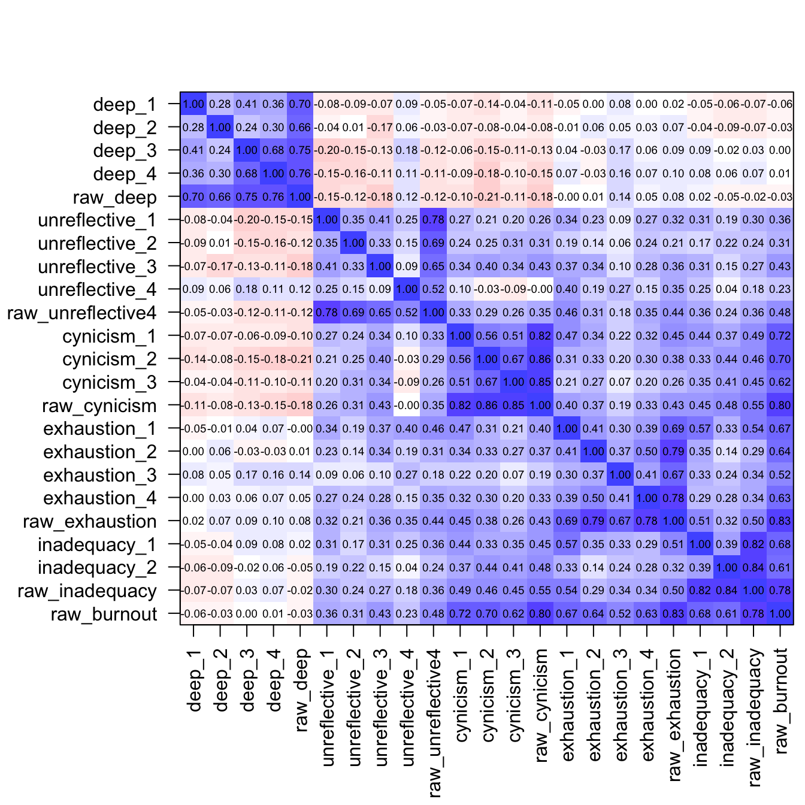
corPlotUpperLowerCi( # table S2B
R = cci,
numbers = TRUE,
show.legend = FALSE,
main = '',
xlas = 2,
MAR = 5,
keep.par = TRUE
) 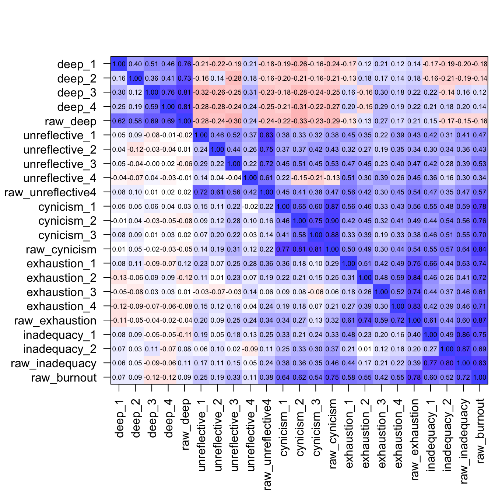
Deep sampling for kurtosis bootstrapping requires setting SAMPLING_DEPTH accordingly if an accurate estimate of the p-value is desirable. This may push the resources of a personal computer. CI_VALUE may also need to be adjusted.
# for an accurate p-value estimation, depending on your computer resources:
SAMPLING_DEPTH = 2000 # change to desired depth, e.g. 10^7, or more
CI_VALUE = 0.95 # decrease e.g to 0.9 or 0.8
### Table S3A: normality of vetrepos score
# Shapiro-Wilk test fails on the VetRepos test score
shapiro.test(raw_data$vetrepos_score)
Shapiro-Wilk normality test
data: raw_data$vetrepos_score
W = 0.98552, p-value = 0.01292# bootstrapped kurtosis (VetRepos test score)
fun_kurtosis <- function(d,ind){
return (kurtosi(d[ind,]))
}
set.seed(1234)
bootout_kurtosis <- boot(
data = raw_data['vetrepos_score'],
statistic = fun_kurtosis,
R = SAMPLING_DEPTH
)
n = length(which(sort(bootout_kurtosis$t) >= 0))
p_kurtosis = (2*n)/bootout_kurtosis$R
ci_kurtosis <- boot.ci(
bootout_kurtosis,
conf = CI_VALUE,
type = 'perc'
)
vetrepos_kurtosis <- c(
ci_kurtosis$percent[4],
ci_kurtosis$t0,
ci_kurtosis$percent[5],
p_kurtosis
)
# bootstrapped skewness (VetRepos test score)
fun_skewness <- function(d,ind){
return(skew(d[ind])['skew (g1)'])
}
set.seed(1234)
bootout_skewness <- boot(
data = raw_data$vetrepos_score,
statistic = fun_skewness,
R = 2000
)
p_skew = 2*(1-(length(which(sort(bootout_skewness$t) >= 0)))/2000)
ci_skewness <- boot.ci(
bootout_skewness,
conf = 0.95,
type = 'perc'
)
vetrepos_skewness <- c(
ci_skewness$percent[4],
ci_skewness$t0,
ci_skewness$percent[5],
p_skew
)
STable3A <- data.frame(
lower_ci = numeric(),
estimate = numeric(),
upper_ci = numeric(),
pvalue = numeric()
)
STable3A <-rbind(
rbind(STable3A,vetrepos_skewness),
vetrepos_kurtosis
)
colnames(STable3A) <- c('lower_ci', 'estimate', 'upper_ci', "pvalue")
rownames(STable3A) <- c('skewness', 'kurtosis')
kbl(
STable3A,
caption = "Table S3A. Kurtosis and skewness of the VetRepos score",
) | lower_ci | estimate | upper_ci | pvalue | |
|---|---|---|---|---|
| skewness | -0.1521057 | 0.0301417 | 0.1993484 | 0.745 |
| kurtosis | -0.9787786 | -0.7477947 | -0.4840059 | 0.000 |
### Table S3B: normality of the scales
# Mardia's test on the scales, requires semTools
mardia_list <- list()
for (
s in c(
list(scale_all),
list(scale_deep),
list(scale_unreflective4),
list(scale_unreflective3),
list(scale_cynicism),
list(scale_exhaustion),
list(scale_inadequacy)
)
){
estimates <- c(mardiaKurtosis(raw_data[,c(s)]), mardiaSkew(raw_data[,c(s)]))
mardia_list <- append(mardia_list, estimates)
}
matrix_mardia <- matrix(
data=unlist(mardia_list), nrow=7, ncol=7, byrow = T,
dimnames = c(
list(
c(
"all_scales",
"deep_approach",
"unreflective_approach4",
"unreflective_approach3",
"cynicism",
"exhaustion",
"inadequacy"
)
),
list(c('b2d', 'z', 'p2', 'b1d', 'chi', 'df', 'p1'))
)
)
stable3B <- data.frame(matrix_mardia)
kbl(
stable3B,
caption = "Table S3B. Mardia's multivariate normality test on the scales",
) | b2d | z | p2 | b1d | chi | df | p1 | |
|---|---|---|---|---|---|---|---|
| all_scales | 344.915837 | 6.7894979 | 0.0000000 | 36.0018973 | 1488.078423 | 969 | 0.0000000 |
| deep_approach | 27.282787 | 3.7309365 | 0.0001908 | 2.1548234 | 89.066035 | 20 | 0.0000000 |
| unreflective_approach4 | 24.136013 | 0.1545809 | 0.8771517 | 1.8033408 | 74.538088 | 20 | 0.0000000 |
| unreflective_approach3 | 14.247097 | -1.0823660 | 0.2790899 | 0.7139070 | 29.508155 | 10 | 0.0010305 |
| cynicism | 16.299374 | 1.8679680 | 0.0617665 | 2.0099971 | 83.079880 | 10 | 0.0000000 |
| exhaustion | 22.819720 | -1.3414059 | 0.1797887 | 1.1498543 | 47.527309 | 20 | 0.0004954 |
| inadequacy | 6.765118 | -2.4308677 | 0.0150627 | 0.0319093 | 1.318918 | 4 | 0.8581577 |
# Table S4A
STable4A <- standardizedSolution(fit_measurement, output = 'data.frame')
STable4A$h2 = NA
STable4A [STable4A$op == "=~", "h2"] <- STable4A [STable4A$op == "=~", "est.std"]^2
STable4A <- cbind(
STable4A[1:3],
round(STable4A[4:ncol(STable4A)], 2)
)
kbl(
STable4A,
caption = "Table S4A. Parameter estimates from the measurement model fitted on the unweighted data"
) | lhs | op | rhs | est.std | se | z | pvalue | ci.lower | ci.upper | h2 |
|---|---|---|---|---|---|---|---|---|---|
| f_deep | =~ | deep_1 | 0.50 | 0.06 | 8.40 | 0.00 | 0.38 | 0.61 | 0.25 |
| f_deep | =~ | deep_2 | 0.38 | 0.07 | 5.63 | 0.00 | 0.25 | 0.51 | 0.14 |
| f_deep | =~ | deep_3 | 0.82 | 0.05 | 17.03 | 0.00 | 0.73 | 0.92 | 0.68 |
| f_deep | =~ | deep_4 | 0.82 | 0.05 | 17.07 | 0.00 | 0.73 | 0.92 | 0.68 |
| f_unreflective | =~ | unreflective_1 | 0.63 | 0.06 | 11.10 | 0.00 | 0.52 | 0.74 | 0.40 |
| f_unreflective | =~ | unreflective_2 | 0.53 | 0.07 | 8.00 | 0.00 | 0.40 | 0.66 | 0.28 |
| f_unreflective | =~ | unreflective_3 | 0.68 | 0.06 | 11.67 | 0.00 | 0.56 | 0.79 | 0.46 |
| f_cynicism | =~ | cynicism_1 | 0.70 | 0.05 | 15.54 | 0.00 | 0.61 | 0.79 | 0.49 |
| f_cynicism | =~ | cynicism_2 | 0.86 | 0.04 | 23.65 | 0.00 | 0.79 | 0.93 | 0.74 |
| f_cynicism | =~ | cynicism_3 | 0.73 | 0.04 | 18.10 | 0.00 | 0.65 | 0.81 | 0.54 |
| f_exhaustion | =~ | exhaustion_1 | 0.64 | 0.05 | 13.26 | 0.00 | 0.55 | 0.74 | 0.41 |
| f_exhaustion | =~ | exhaustion_2 | 0.68 | 0.05 | 12.69 | 0.00 | 0.57 | 0.78 | 0.46 |
| f_exhaustion | =~ | exhaustion_3 | 0.52 | 0.06 | 8.76 | 0.00 | 0.41 | 0.64 | 0.28 |
| f_exhaustion | =~ | exhaustion_4 | 0.69 | 0.05 | 14.68 | 0.00 | 0.60 | 0.78 | 0.48 |
| deep_1 | ~~ | deep_1 | 0.75 | 0.06 | 12.76 | 0.00 | 0.64 | 0.87 | NA |
| deep_2 | ~~ | deep_2 | 0.86 | 0.05 | 17.02 | 0.00 | 0.76 | 0.96 | NA |
| deep_3 | ~~ | deep_3 | 0.32 | 0.08 | 4.08 | 0.00 | 0.17 | 0.48 | NA |
| deep_4 | ~~ | deep_4 | 0.32 | 0.08 | 4.11 | 0.00 | 0.17 | 0.48 | NA |
| unreflective_1 | ~~ | unreflective_1 | 0.60 | 0.07 | 8.46 | 0.00 | 0.46 | 0.74 | NA |
| unreflective_2 | ~~ | unreflective_2 | 0.72 | 0.07 | 10.25 | 0.00 | 0.58 | 0.86 | NA |
| unreflective_3 | ~~ | unreflective_3 | 0.54 | 0.08 | 6.95 | 0.00 | 0.39 | 0.70 | NA |
| cynicism_1 | ~~ | cynicism_1 | 0.51 | 0.06 | 8.11 | 0.00 | 0.39 | 0.63 | NA |
| cynicism_2 | ~~ | cynicism_2 | 0.26 | 0.06 | 4.25 | 0.00 | 0.14 | 0.39 | NA |
| cynicism_3 | ~~ | cynicism_3 | 0.46 | 0.06 | 7.72 | 0.00 | 0.34 | 0.58 | NA |
| exhaustion_1 | ~~ | exhaustion_1 | 0.59 | 0.06 | 9.47 | 0.00 | 0.47 | 0.71 | NA |
| exhaustion_2 | ~~ | exhaustion_2 | 0.54 | 0.07 | 7.54 | 0.00 | 0.40 | 0.68 | NA |
| exhaustion_3 | ~~ | exhaustion_3 | 0.72 | 0.06 | 11.52 | 0.00 | 0.60 | 0.85 | NA |
| exhaustion_4 | ~~ | exhaustion_4 | 0.52 | 0.07 | 7.98 | 0.00 | 0.39 | 0.65 | NA |
| f_deep | ~~ | f_deep | 1.00 | 0.00 | NA | NA | 1.00 | 1.00 | NA |
| f_unreflective | ~~ | f_unreflective | 1.00 | 0.00 | NA | NA | 1.00 | 1.00 | NA |
| f_cynicism | ~~ | f_cynicism | 1.00 | 0.00 | NA | NA | 1.00 | 1.00 | NA |
| f_exhaustion | ~~ | f_exhaustion | 1.00 | 0.00 | NA | NA | 1.00 | 1.00 | NA |
| f_deep | ~~ | f_unreflective | -0.29 | 0.08 | -3.54 | 0.00 | -0.46 | -0.13 | NA |
| f_deep | ~~ | f_cynicism | -0.19 | 0.09 | -2.07 | 0.04 | -0.37 | -0.01 | NA |
| f_deep | ~~ | f_exhaustion | 0.08 | 0.08 | 1.09 | 0.28 | -0.07 | 0.23 | NA |
| f_unreflective | ~~ | f_cynicism | 0.55 | 0.08 | 6.73 | 0.00 | 0.39 | 0.71 | NA |
| f_unreflective | ~~ | f_exhaustion | 0.63 | 0.07 | 8.53 | 0.00 | 0.49 | 0.78 | NA |
| f_cynicism | ~~ | f_exhaustion | 0.54 | 0.06 | 8.42 | 0.00 | 0.41 | 0.66 | NA |
The following code chunk won’t run on anonymous data.
# The following code chunk won't run on anonymous data.
# Table S4B
STable4B <- standardizedSolution(fit_weighted_measurement, output = 'data.frame')
STable4B$h2 = NA
STable4B [STable4B$op == "=~", "h2"] <- STable4B [STable4B$op == "=~", "est.std"]^2
STable4B <- cbind(
STable4B[1:3],
round(STable4B[4:ncol(STable4B)], 2)
)
kbl(
STable4B,
caption = "Table S4B. Parameter estimates from the measurement model fitted on the weighted data"
)| lhs | op | rhs | est.std | se | z | pvalue | ci.lower | ci.upper | h2 |
|---|---|---|---|---|---|---|---|---|---|
| f_deep | =~ | deep_1 | 0.48 | 0.06 | 7.54 | 0.00 | 0.35 | 0.60 | 0.23 |
| f_deep | =~ | deep_2 | 0.34 | 0.07 | 4.99 | 0.00 | 0.21 | 0.48 | 0.12 |
| f_deep | =~ | deep_3 | 0.89 | 0.05 | 16.46 | 0.00 | 0.78 | 0.99 | 0.79 |
| f_deep | =~ | deep_4 | 0.79 | 0.05 | 15.34 | 0.00 | 0.69 | 0.89 | 0.63 |
| f_unreflective | =~ | unreflective_1 | 0.62 | 0.06 | 10.90 | 0.00 | 0.51 | 0.73 | 0.39 |
| f_unreflective | =~ | unreflective_2 | 0.51 | 0.07 | 7.67 | 0.00 | 0.38 | 0.64 | 0.26 |
| f_unreflective | =~ | unreflective_3 | 0.68 | 0.06 | 11.28 | 0.00 | 0.56 | 0.79 | 0.46 |
| f_cynicism | =~ | cynicism_1 | 0.70 | 0.04 | 15.87 | 0.00 | 0.62 | 0.79 | 0.49 |
| f_cynicism | =~ | cynicism_2 | 0.88 | 0.04 | 24.13 | 0.00 | 0.81 | 0.96 | 0.78 |
| f_cynicism | =~ | cynicism_3 | 0.76 | 0.04 | 18.66 | 0.00 | 0.68 | 0.84 | 0.58 |
| f_exhaustion | =~ | exhaustion_1 | 0.65 | 0.05 | 13.91 | 0.00 | 0.56 | 0.74 | 0.42 |
| f_exhaustion | =~ | exhaustion_2 | 0.68 | 0.05 | 13.54 | 0.00 | 0.58 | 0.77 | 0.46 |
| f_exhaustion | =~ | exhaustion_3 | 0.56 | 0.06 | 10.13 | 0.00 | 0.45 | 0.67 | 0.31 |
| f_exhaustion | =~ | exhaustion_4 | 0.74 | 0.04 | 16.63 | 0.00 | 0.66 | 0.83 | 0.55 |
| deep_1 | ~~ | deep_1 | 0.77 | 0.06 | 12.72 | 0.00 | 0.65 | 0.89 | NA |
| deep_2 | ~~ | deep_2 | 0.88 | 0.05 | 18.63 | 0.00 | 0.79 | 0.97 | NA |
| deep_3 | ~~ | deep_3 | 0.21 | 0.10 | 2.21 | 0.03 | 0.02 | 0.40 | NA |
| deep_4 | ~~ | deep_4 | 0.37 | 0.08 | 4.58 | 0.00 | 0.21 | 0.53 | NA |
| unreflective_1 | ~~ | unreflective_1 | 0.61 | 0.07 | 8.60 | 0.00 | 0.47 | 0.75 | NA |
| unreflective_2 | ~~ | unreflective_2 | 0.74 | 0.07 | 10.73 | 0.00 | 0.60 | 0.87 | NA |
| unreflective_3 | ~~ | unreflective_3 | 0.54 | 0.08 | 6.69 | 0.00 | 0.38 | 0.70 | NA |
| cynicism_1 | ~~ | cynicism_1 | 0.51 | 0.06 | 8.15 | 0.00 | 0.38 | 0.63 | NA |
| cynicism_2 | ~~ | cynicism_2 | 0.22 | 0.06 | 3.37 | 0.00 | 0.09 | 0.35 | NA |
| cynicism_3 | ~~ | cynicism_3 | 0.42 | 0.06 | 6.79 | 0.00 | 0.30 | 0.54 | NA |
| exhaustion_1 | ~~ | exhaustion_1 | 0.58 | 0.06 | 9.66 | 0.00 | 0.46 | 0.70 | NA |
| exhaustion_2 | ~~ | exhaustion_2 | 0.54 | 0.07 | 8.01 | 0.00 | 0.41 | 0.67 | NA |
| exhaustion_3 | ~~ | exhaustion_3 | 0.69 | 0.06 | 11.19 | 0.00 | 0.57 | 0.81 | NA |
| exhaustion_4 | ~~ | exhaustion_4 | 0.45 | 0.07 | 6.75 | 0.00 | 0.32 | 0.58 | NA |
| f_deep | ~~ | f_deep | 1.00 | 0.00 | NA | NA | 1.00 | 1.00 | NA |
| f_unreflective | ~~ | f_unreflective | 1.00 | 0.00 | NA | NA | 1.00 | 1.00 | NA |
| f_cynicism | ~~ | f_cynicism | 1.00 | 0.00 | NA | NA | 1.00 | 1.00 | NA |
| f_exhaustion | ~~ | f_exhaustion | 1.00 | 0.00 | NA | NA | 1.00 | 1.00 | NA |
| f_deep | ~~ | f_unreflective | -0.18 | 0.09 | -2.11 | 0.03 | -0.35 | -0.01 | NA |
| f_deep | ~~ | f_cynicism | -0.13 | 0.09 | -1.45 | 0.15 | -0.30 | 0.05 | NA |
| f_deep | ~~ | f_exhaustion | 0.14 | 0.07 | 1.93 | 0.05 | 0.00 | 0.28 | NA |
| f_unreflective | ~~ | f_cynicism | 0.52 | 0.08 | 6.34 | 0.00 | 0.36 | 0.68 | NA |
| f_unreflective | ~~ | f_exhaustion | 0.64 | 0.07 | 9.07 | 0.00 | 0.50 | 0.78 | NA |
| f_cynicism | ~~ | f_exhaustion | 0.52 | 0.06 | 8.59 | 0.00 | 0.40 | 0.64 | NA |
# Table S5A unweighted complete data
STable5A <- lavResiduals(fit_fullSEM, type = 'cor')$cov
range(STable5A)[1] -0.1493163 0.2276201kbl(
round(STable5A,3),
caption = "Table S5A. Standardized residual correlations. Full SEM.",
) | deep_1 | deep_2 | deep_3 | deep_4 | unreflective_1 | unreflective_2 | unreflective_3 | cynicism_1 | cynicism_2 | cynicism_3 | exhaustion_1 | exhaustion_2 | exhaustion_3 | exhaustion_4 | score_div100 | study_year | |
|---|---|---|---|---|---|---|---|---|---|---|---|---|---|---|---|---|
| deep_1 | 0.000 | 0.153 | -0.003 | -0.018 | 0.002 | -0.035 | 0.050 | -0.008 | -0.058 | 0.009 | -0.102 | -0.032 | 0.055 | -0.016 | 0.049 | 0.090 |
| deep_2 | 0.153 | 0.000 | -0.044 | 0.013 | 0.027 | 0.047 | -0.072 | -0.030 | -0.006 | -0.014 | -0.044 | 0.049 | 0.033 | 0.017 | -0.071 | -0.035 |
| deep_3 | -0.003 | -0.044 | 0.000 | 0.005 | -0.042 | -0.010 | 0.032 | 0.055 | 0.013 | -0.011 | -0.028 | -0.047 | 0.130 | 0.014 | 0.066 | 0.069 |
| deep_4 | -0.018 | 0.013 | 0.005 | 0.000 | -0.016 | -0.039 | 0.040 | 0.010 | -0.027 | 0.014 | -0.011 | -0.065 | 0.111 | 0.009 | 0.052 | 0.106 |
| unreflective_1 | 0.002 | 0.027 | -0.042 | -0.016 | 0.000 | 0.042 | -0.006 | 0.028 | -0.103 | -0.067 | 0.108 | -0.014 | -0.095 | 0.008 | -0.034 | -0.075 |
| unreflective_2 | -0.035 | 0.047 | -0.010 | -0.039 | 0.042 | 0.000 | -0.027 | 0.019 | 0.004 | 0.080 | 0.002 | -0.097 | -0.117 | 0.013 | 0.000 | 0.033 |
| unreflective_3 | 0.050 | -0.072 | 0.032 | 0.040 | -0.006 | -0.027 | 0.000 | 0.061 | 0.048 | -0.010 | 0.107 | 0.037 | -0.098 | -0.012 | -0.018 | -0.035 |
| cynicism_1 | -0.008 | -0.030 | 0.055 | 0.010 | 0.028 | 0.019 | 0.061 | 0.000 | -0.016 | -0.019 | 0.228 | 0.092 | 0.019 | 0.055 | 0.022 | 0.017 |
| cynicism_2 | -0.058 | -0.006 | 0.013 | -0.027 | -0.103 | 0.004 | 0.048 | -0.016 | 0.000 | 0.022 | 0.018 | -0.020 | -0.011 | -0.027 | 0.084 | 0.080 |
| cynicism_3 | 0.009 | -0.014 | -0.011 | 0.014 | -0.067 | 0.080 | -0.010 | -0.019 | 0.022 | 0.000 | -0.030 | -0.033 | -0.149 | -0.081 | -0.061 | 0.005 |
| exhaustion_1 | -0.102 | -0.044 | -0.028 | -0.011 | 0.108 | 0.002 | 0.107 | 0.228 | 0.018 | -0.030 | 0.000 | -0.013 | -0.023 | -0.049 | 0.095 | 0.124 |
| exhaustion_2 | -0.032 | 0.049 | -0.047 | -0.065 | -0.014 | -0.097 | 0.037 | 0.092 | -0.020 | -0.033 | -0.013 | 0.000 | 0.023 | 0.024 | -0.070 | -0.057 |
| exhaustion_3 | 0.055 | 0.033 | 0.130 | 0.111 | -0.095 | -0.117 | -0.098 | 0.019 | -0.011 | -0.149 | -0.023 | 0.023 | 0.000 | 0.050 | 0.109 | 0.078 |
| exhaustion_4 | -0.016 | 0.017 | 0.014 | 0.009 | 0.008 | 0.013 | -0.012 | 0.055 | -0.027 | -0.081 | -0.049 | 0.024 | 0.050 | 0.000 | -0.007 | 0.004 |
| score_div100 | 0.049 | -0.071 | 0.066 | 0.052 | -0.034 | 0.000 | -0.018 | 0.022 | 0.084 | -0.061 | 0.095 | -0.070 | 0.109 | -0.007 | 0.000 | 0.012 |
| study_year | 0.090 | -0.035 | 0.069 | 0.106 | -0.075 | 0.033 | -0.035 | 0.017 | 0.080 | 0.005 | 0.124 | -0.057 | 0.078 | 0.004 | 0.012 | 0.000 |
The following code chunks won’t run on anonymous data.
# The following code chunk won't run on anonymous data.
# Table S5B weighted data
STable5B <- lavResiduals(fit_weighted_fullSEM, type = 'cor')$cov
range(STable5B)[1] -0.1373657 0.2563980kbl(
round(STable5B,3),
caption = "Table S5B. Standardized residual correlations. Full SEM, weighted data.",
) | deep_1 | deep_2 | deep_3 | deep_4 | unreflective_1 | unreflective_2 | unreflective_3 | cynicism_1 | cynicism_2 | cynicism_3 | exhaustion_1 | exhaustion_2 | exhaustion_3 | exhaustion_4 | score_div100 | study_year | |
|---|---|---|---|---|---|---|---|---|---|---|---|---|---|---|---|---|
| deep_1 | 0.000 | 0.166 | -0.003 | -0.014 | -0.069 | -0.024 | 0.074 | 0.013 | -0.026 | 0.024 | -0.086 | -0.094 | -0.019 | -0.022 | 0.025 | 0.041 |
| deep_2 | 0.166 | 0.000 | -0.024 | 0.016 | -0.010 | 0.084 | -0.035 | -0.021 | 0.021 | -0.023 | -0.062 | -0.029 | -0.030 | 0.007 | -0.053 | -0.004 |
| deep_3 | -0.003 | -0.024 | 0.000 | 0.002 | -0.104 | -0.060 | 0.095 | 0.022 | 0.008 | -0.016 | -0.021 | -0.066 | 0.047 | 0.060 | -0.018 | -0.046 |
| deep_4 | -0.014 | 0.016 | 0.002 | 0.000 | -0.072 | -0.036 | 0.129 | 0.009 | -0.027 | 0.016 | -0.008 | -0.069 | 0.027 | 0.064 | -0.009 | 0.009 |
| unreflective_1 | -0.069 | -0.010 | -0.104 | -0.072 | 0.000 | 0.026 | -0.009 | 0.034 | -0.103 | -0.092 | 0.102 | -0.010 | -0.137 | 0.008 | -0.025 | -0.031 |
| unreflective_2 | -0.024 | 0.084 | -0.060 | -0.036 | 0.026 | 0.000 | -0.009 | 0.042 | 0.027 | 0.052 | -0.019 | -0.131 | -0.109 | 0.006 | 0.013 | 0.059 |
| unreflective_3 | 0.074 | -0.035 | 0.095 | 0.129 | -0.009 | -0.009 | 0.000 | 0.090 | 0.049 | -0.021 | 0.141 | 0.034 | -0.054 | -0.006 | 0.046 | 0.043 |
| cynicism_1 | 0.013 | -0.021 | 0.022 | 0.009 | 0.034 | 0.042 | 0.090 | 0.000 | -0.016 | -0.011 | 0.256 | 0.076 | 0.032 | 0.040 | 0.068 | 0.083 |
| cynicism_2 | -0.026 | 0.021 | 0.008 | -0.027 | -0.103 | 0.027 | 0.049 | -0.016 | 0.000 | 0.016 | 0.040 | -0.006 | -0.014 | -0.036 | 0.109 | 0.128 |
| cynicism_3 | 0.024 | -0.023 | -0.016 | 0.016 | -0.092 | 0.052 | -0.021 | -0.011 | 0.016 | 0.000 | -0.038 | -0.019 | -0.130 | -0.072 | -0.009 | 0.090 |
| exhaustion_1 | -0.086 | -0.062 | -0.021 | -0.008 | 0.102 | -0.019 | 0.141 | 0.256 | 0.040 | -0.038 | 0.000 | -0.001 | -0.031 | -0.053 | 0.098 | 0.123 |
| exhaustion_2 | -0.094 | -0.029 | -0.066 | -0.069 | -0.010 | -0.131 | 0.034 | 0.076 | -0.006 | -0.019 | -0.001 | 0.000 | 0.034 | 0.011 | -0.032 | -0.002 |
| exhaustion_3 | -0.019 | -0.030 | 0.047 | 0.027 | -0.137 | -0.109 | -0.054 | 0.032 | -0.014 | -0.130 | -0.031 | 0.034 | 0.000 | 0.052 | 0.073 | 0.058 |
| exhaustion_4 | -0.022 | 0.007 | 0.060 | 0.064 | 0.008 | 0.006 | -0.006 | 0.040 | -0.036 | -0.072 | -0.053 | 0.011 | 0.052 | 0.000 | 0.011 | 0.027 |
| score_div100 | 0.025 | -0.053 | -0.018 | -0.009 | -0.025 | 0.013 | 0.046 | 0.068 | 0.109 | -0.009 | 0.098 | -0.032 | 0.073 | 0.011 | 0.000 | -0.003 |
| study_year | 0.041 | -0.004 | -0.046 | 0.009 | -0.031 | 0.059 | 0.043 | 0.083 | 0.128 | 0.090 | 0.123 | -0.002 | 0.058 | 0.027 | -0.003 | 0.000 |
The following code chunk won’t run on anonymous data.
# The following code chunk won't run on anonymous data.
# full SEM fitted to down-sampled data, residual interitem correlations
all_res_corr <- list()
for (i in 1:n_iterations){
res_corr <- downsampled_data_residual_correlations[[i]]
all_res_corr <- append(all_res_corr, res_corr[lower.tri(res_corr)])
}
range(unlist(all_res_corr)) [1] -0.2256855 0.3143270# Table S6A unweighted complete data
res_z = lavResiduals(fit_fullSEM, type = 'raw')$cov.z
range(res_z)[1] -2.918249 4.855455kbl(
round(res_z,2),
caption = "Table S6A. Standardized residual covariances, full SEM",
)| deep_1 | deep_2 | deep_3 | deep_4 | unreflective_1 | unreflective_2 | unreflective_3 | cynicism_1 | cynicism_2 | cynicism_3 | exhaustion_1 | exhaustion_2 | exhaustion_3 | exhaustion_4 | score_div100 | study_year | |
|---|---|---|---|---|---|---|---|---|---|---|---|---|---|---|---|---|
| deep_1 | 0.00 | 2.93 | -0.17 | -0.77 | 0.04 | -0.65 | 0.79 | -0.15 | -1.00 | 0.16 | -1.71 | -0.51 | 0.84 | -0.28 | 0.96 | 1.48 |
| deep_2 | 2.93 | 0.00 | -2.44 | 0.52 | 0.45 | 0.78 | -1.24 | -0.49 | -0.11 | -0.23 | -0.79 | 0.81 | 0.53 | 0.31 | -1.25 | -0.57 |
| deep_3 | -0.17 | -2.44 | 0.00 | 1.14 | -0.88 | -0.25 | 0.68 | 1.17 | 0.41 | -0.23 | -0.61 | -0.99 | 2.12 | 0.33 | 1.45 | 1.06 |
| deep_4 | -0.77 | 0.52 | 1.14 | 0.00 | -0.31 | -0.91 | 0.85 | 0.22 | -0.78 | 0.33 | -0.24 | -1.35 | 1.87 | 0.20 | 1.18 | 1.64 |
| unreflective_1 | 0.04 | 0.45 | -0.88 | -0.31 | 0.00 | 1.37 | -0.31 | 0.66 | -2.92 | -1.57 | 2.13 | -0.35 | -1.96 | 0.17 | -0.74 | -1.17 |
| unreflective_2 | -0.65 | 0.78 | -0.25 | -0.91 | 1.37 | 0.00 | -1.07 | 0.41 | 0.12 | 1.87 | 0.05 | -2.23 | -2.23 | 0.29 | -0.04 | 0.55 |
| unreflective_3 | 0.79 | -1.24 | 0.68 | 0.85 | -0.31 | -1.07 | 0.00 | 1.50 | 1.28 | -0.21 | 2.44 | 0.89 | -1.96 | -0.33 | -0.40 | -0.54 |
| cynicism_1 | -0.15 | -0.49 | 1.17 | 0.22 | 0.66 | 0.41 | 1.50 | 0.00 | -2.26 | -1.24 | 4.86 | 2.01 | 0.35 | 1.14 | 0.41 | 0.26 |
| cynicism_2 | -1.00 | -0.11 | 0.41 | -0.78 | -2.92 | 0.12 | 1.28 | -2.26 | 0.00 | 3.19 | 0.42 | -0.51 | -0.23 | -0.77 | 1.83 | 1.28 |
| cynicism_3 | 0.16 | -0.23 | -0.23 | 0.33 | -1.57 | 1.87 | -0.21 | -1.24 | 3.19 | 0.00 | -0.68 | -0.76 | -2.70 | -1.72 | -1.28 | 0.08 |
| exhaustion_1 | -1.71 | -0.79 | -0.61 | -0.24 | 2.13 | 0.05 | 2.44 | 4.86 | 0.42 | -0.68 | 0.00 | -0.53 | -0.74 | -2.14 | 1.70 | 1.87 |
| exhaustion_2 | -0.51 | 0.81 | -0.99 | -1.35 | -0.35 | -2.23 | 0.89 | 2.01 | -0.51 | -0.76 | -0.53 | 0.00 | 0.73 | 1.19 | -1.41 | -0.92 |
| exhaustion_3 | 0.84 | 0.53 | 2.12 | 1.87 | -1.96 | -2.23 | -1.96 | 0.35 | -0.23 | -2.70 | -0.74 | 0.73 | 0.00 | 1.54 | 1.96 | 1.19 |
| exhaustion_4 | -0.28 | 0.31 | 0.33 | 0.20 | 0.17 | 0.29 | -0.33 | 1.14 | -0.77 | -1.72 | -2.14 | 1.19 | 1.54 | 0.00 | -0.14 | 0.07 |
| score_div100 | 0.96 | -1.25 | 1.45 | 1.18 | -0.74 | -0.04 | -0.40 | 0.41 | 1.83 | -1.28 | 1.70 | -1.41 | 1.96 | -0.14 | 1.38 | 1.38 |
| study_year | 1.48 | -0.57 | 1.06 | 1.64 | -1.17 | 0.55 | -0.54 | 0.26 | 1.28 | 0.08 | 1.87 | -0.92 | 1.19 | 0.07 | 1.38 | 0.00 |
The following code chunks won’t run on anonymous data.
# The following code chunk won't run on anonymous data.
# Table S6B weighted data
res_z = lavResiduals(fit_weighted_fullSEM, type = 'raw')$cov.z
range(res_z)[1] -3.031664 5.414844kbl(
round(res_z,2),
caption = "Table S6B. Standardized residual covariances, full SEM, weighted data",
)| deep_1 | deep_2 | deep_3 | deep_4 | unreflective_1 | unreflective_2 | unreflective_3 | cynicism_1 | cynicism_2 | cynicism_3 | exhaustion_1 | exhaustion_2 | exhaustion_3 | exhaustion_4 | score_div100 | study_year | |
|---|---|---|---|---|---|---|---|---|---|---|---|---|---|---|---|---|
| deep_1 | 0.00 | 3.02 | -0.24 | -0.52 | -1.11 | -0.42 | 1.09 | 0.23 | -0.42 | 0.39 | -1.34 | -1.41 | -0.30 | -0.35 | 0.40 | 0.66 |
| deep_2 | 3.02 | 0.00 | -1.90 | 0.53 | -0.17 | 1.38 | -0.58 | -0.36 | 0.37 | -0.39 | -1.10 | -0.49 | -0.52 | 0.13 | -0.84 | -0.06 |
| deep_3 | -0.24 | -1.90 | 0.00 | 0.75 | -2.18 | -1.47 | 2.04 | 0.46 | 0.30 | -0.32 | -0.45 | -1.44 | 0.80 | 1.53 | -0.40 | -0.68 |
| deep_4 | -0.52 | 0.53 | 0.75 | 0.00 | -1.28 | -0.77 | 2.40 | 0.19 | -0.68 | 0.33 | -0.16 | -1.32 | 0.45 | 1.40 | -0.18 | 0.14 |
| unreflective_1 | -1.11 | -0.17 | -2.18 | -1.28 | 0.00 | 0.85 | -0.51 | 0.82 | -2.90 | -2.10 | 2.00 | -0.24 | -2.96 | 0.19 | -0.49 | -0.49 |
| unreflective_2 | -0.42 | 1.38 | -1.47 | -0.77 | 0.85 | 0.00 | -0.35 | 0.89 | 0.70 | 1.17 | -0.41 | -3.03 | -2.18 | 0.13 | 0.25 | 0.98 |
| unreflective_3 | 1.09 | -0.58 | 2.04 | 2.40 | -0.51 | -0.35 | 0.00 | 2.16 | 1.28 | -0.42 | 3.12 | 0.82 | -1.12 | -0.17 | 0.85 | 0.64 |
| cynicism_1 | 0.23 | -0.36 | 0.46 | 0.19 | 0.82 | 0.89 | 2.16 | 0.00 | -2.66 | -0.73 | 5.41 | 1.66 | 0.62 | 0.84 | 1.30 | 1.30 |
| cynicism_2 | -0.42 | 0.37 | 0.30 | -0.68 | -2.90 | 0.70 | 1.28 | -2.66 | 0.00 | 3.38 | 0.92 | -0.14 | -0.32 | -1.11 | 2.37 | 1.99 |
| cynicism_3 | 0.39 | -0.39 | -0.32 | 0.33 | -2.10 | 1.17 | -0.42 | -0.73 | 3.38 | 0.00 | -0.82 | -0.43 | -2.35 | -1.53 | -0.16 | 1.35 |
| exhaustion_1 | -1.34 | -1.10 | -0.45 | -0.16 | 2.00 | -0.41 | 3.12 | 5.41 | 0.92 | -0.82 | 0.00 | -0.03 | -1.01 | -2.57 | 1.63 | 1.85 |
| exhaustion_2 | -1.41 | -0.49 | -1.44 | -1.32 | -0.24 | -3.03 | 0.82 | 1.66 | -0.14 | -0.43 | -0.03 | 0.00 | 1.11 | 0.62 | -0.60 | -0.03 |
| exhaustion_3 | -0.30 | -0.52 | 0.80 | 0.45 | -2.96 | -2.18 | -1.12 | 0.62 | -0.32 | -2.35 | -1.01 | 1.11 | 0.00 | 1.89 | 1.25 | 0.91 |
| exhaustion_4 | -0.35 | 0.13 | 1.53 | 1.40 | 0.19 | 0.13 | -0.17 | 0.84 | -1.11 | -1.53 | -2.57 | 0.62 | 1.89 | 0.00 | 0.21 | 0.41 |
| score_div100 | 0.40 | -0.84 | -0.40 | -0.18 | -0.49 | 0.25 | 0.85 | 1.30 | 2.37 | -0.16 | 1.63 | -0.60 | 1.25 | 0.21 | -0.41 | -0.41 |
| study_year | 0.66 | -0.06 | -0.68 | 0.14 | -0.49 | 0.98 | 0.64 | 1.30 | 1.99 | 1.35 | 1.85 | -0.03 | 0.91 | 0.41 | -0.41 | 0.00 |
The following code chunk won’t run on anonymous data.
# The following code chunk won't run on anonymous data.
# full SEM fitted to down-sampled data, standardized residual covariances
all_resz <- list()
for (i in 1:n_iterations){
res_z <- downsampled_data_standardized_residual_covariances[[i]]
all_resz <- append(all_resz, res_z[lower.tri(res_z)])
}
range(unlist(all_resz))[1] -4.361720 5.287087# Table S7A
STable7A <- standardizedSolution(fit_fullSEM, output = 'data.frame')
STable7A["h2"] <- NA
STable7A[STable7A$op == "=~", "h2"] <- STable7A[STable7A$op == "=~", "est.std"]^2
tableS7A <- cbind(STable7A[1:3], round(STable7A[4:ncol(STable7A)], 2))
kbl(
tableS7A,
caption = "Table S7A. Parameter estimates from full SEM fitted on unweighted data"
) | lhs | op | rhs | est.std | se | z | pvalue | ci.lower | ci.upper | h2 |
|---|---|---|---|---|---|---|---|---|---|
| f_deep | =~ | deep_1 | 0.50 | 0.06 | 8.37 | 0.00 | 0.38 | 0.61 | 0.25 |
| f_deep | =~ | deep_2 | 0.37 | 0.07 | 5.50 | 0.00 | 0.24 | 0.50 | 0.14 |
| f_deep | =~ | deep_3 | 0.84 | 0.04 | 18.60 | 0.00 | 0.75 | 0.92 | 0.70 |
| f_deep | =~ | deep_4 | 0.81 | 0.05 | 17.43 | 0.00 | 0.72 | 0.90 | 0.66 |
| f_unreflective | =~ | unreflective_1 | 0.62 | 0.06 | 11.19 | 0.00 | 0.51 | 0.73 | 0.39 |
| f_unreflective | =~ | unreflective_2 | 0.53 | 0.07 | 8.18 | 0.00 | 0.41 | 0.66 | 0.28 |
| f_unreflective | =~ | unreflective_3 | 0.68 | 0.06 | 11.94 | 0.00 | 0.57 | 0.79 | 0.46 |
| f_cynicism | =~ | cynicism_1 | 0.70 | 0.05 | 15.54 | 0.00 | 0.61 | 0.79 | 0.49 |
| f_cynicism | =~ | cynicism_2 | 0.86 | 0.04 | 23.53 | 0.00 | 0.78 | 0.93 | 0.73 |
| f_cynicism | =~ | cynicism_3 | 0.74 | 0.04 | 18.19 | 0.00 | 0.66 | 0.82 | 0.54 |
| f_exhaustion | =~ | exhaustion_1 | 0.64 | 0.05 | 13.32 | 0.00 | 0.55 | 0.74 | 0.41 |
| f_exhaustion | =~ | exhaustion_2 | 0.67 | 0.05 | 12.62 | 0.00 | 0.57 | 0.78 | 0.46 |
| f_exhaustion | =~ | exhaustion_3 | 0.53 | 0.06 | 8.76 | 0.00 | 0.41 | 0.64 | 0.28 |
| f_exhaustion | =~ | exhaustion_4 | 0.69 | 0.05 | 14.59 | 0.00 | 0.60 | 0.78 | 0.48 |
| score_div100 | ~ | f_deep | 0.16 | 0.06 | 2.46 | 0.01 | 0.03 | 0.28 | NA |
| score_div100 | ~ | study_year | 0.68 | 0.03 | 23.52 | 0.00 | 0.62 | 0.73 | NA |
| score_div100 | ~ | f_unreflective | -0.25 | 0.11 | -2.24 | 0.03 | -0.47 | -0.03 | NA |
| score_div100 | ~ | f_cynicism | 0.00 | 0.07 | 0.01 | 1.00 | -0.14 | 0.14 | NA |
| score_div100 | ~ | f_exhaustion | 0.10 | 0.10 | 1.02 | 0.31 | -0.09 | 0.30 | NA |
| f_cynicism | ~~ | f_exhaustion | 0.54 | 0.06 | 8.43 | 0.00 | 0.41 | 0.66 | NA |
| f_unreflective | ~~ | f_cynicism | 0.56 | 0.08 | 6.76 | 0.00 | 0.39 | 0.72 | NA |
| f_unreflective | ~~ | f_exhaustion | 0.63 | 0.07 | 8.54 | 0.00 | 0.49 | 0.78 | NA |
| f_deep | ~~ | f_unreflective | -0.29 | 0.08 | -3.53 | 0.00 | -0.46 | -0.13 | NA |
| deep_1 | ~~ | deep_1 | 0.75 | 0.06 | 12.77 | 0.00 | 0.64 | 0.87 | NA |
| deep_2 | ~~ | deep_2 | 0.86 | 0.05 | 17.46 | 0.00 | 0.77 | 0.96 | NA |
| deep_3 | ~~ | deep_3 | 0.30 | 0.08 | 4.01 | 0.00 | 0.15 | 0.45 | NA |
| deep_4 | ~~ | deep_4 | 0.34 | 0.08 | 4.55 | 0.00 | 0.20 | 0.49 | NA |
| unreflective_1 | ~~ | unreflective_1 | 0.61 | 0.07 | 8.80 | 0.00 | 0.48 | 0.75 | NA |
| unreflective_2 | ~~ | unreflective_2 | 0.72 | 0.07 | 10.27 | 0.00 | 0.58 | 0.85 | NA |
| unreflective_3 | ~~ | unreflective_3 | 0.54 | 0.08 | 7.03 | 0.00 | 0.39 | 0.69 | NA |
| cynicism_1 | ~~ | cynicism_1 | 0.51 | 0.06 | 8.09 | 0.00 | 0.39 | 0.63 | NA |
| cynicism_2 | ~~ | cynicism_2 | 0.27 | 0.06 | 4.30 | 0.00 | 0.15 | 0.39 | NA |
| cynicism_3 | ~~ | cynicism_3 | 0.46 | 0.06 | 7.68 | 0.00 | 0.34 | 0.57 | NA |
| exhaustion_1 | ~~ | exhaustion_1 | 0.59 | 0.06 | 9.44 | 0.00 | 0.46 | 0.71 | NA |
| exhaustion_2 | ~~ | exhaustion_2 | 0.54 | 0.07 | 7.54 | 0.00 | 0.40 | 0.69 | NA |
| exhaustion_3 | ~~ | exhaustion_3 | 0.72 | 0.06 | 11.51 | 0.00 | 0.60 | 0.85 | NA |
| exhaustion_4 | ~~ | exhaustion_4 | 0.52 | 0.07 | 7.96 | 0.00 | 0.39 | 0.65 | NA |
| score_div100 | ~~ | score_div100 | 0.45 | 0.04 | 11.32 | 0.00 | 0.37 | 0.53 | NA |
| f_deep | ~~ | f_deep | 1.00 | 0.00 | NA | NA | 1.00 | 1.00 | NA |
| f_unreflective | ~~ | f_unreflective | 1.00 | 0.00 | NA | NA | 1.00 | 1.00 | NA |
| f_cynicism | ~~ | f_cynicism | 1.00 | 0.00 | NA | NA | 1.00 | 1.00 | NA |
| f_exhaustion | ~~ | f_exhaustion | 1.00 | 0.00 | NA | NA | 1.00 | 1.00 | NA |
| f_deep | ~~ | f_cynicism | -0.19 | 0.09 | -2.07 | 0.04 | -0.37 | -0.01 | NA |
| f_deep | ~~ | f_exhaustion | 0.08 | 0.08 | 1.10 | 0.27 | -0.07 | 0.23 | NA |
| study_year | ~~ | study_year | 1.00 | 0.00 | NA | NA | 1.00 | 1.00 | NA |
The following code chunk won’t run on anonymous data.
# The following code chunk won't run on anonymous data.
STable7B <- standardizedSolution(fit_weighted_fullSEM, output = 'data.frame')
STable7B["h2"] <- NA
STable7B [ STable7B$op == "=~", "h2"] <- (STable7B [ STable7B$op == "=~", "est.std"])^2
tableS7B <- cbind(
STable7B[1:3],
round(STable7B[4:ncol(STable7B)], 2)
)
kbl(
tableS7B,
caption = "Table S7B. Parameter estimates from full SEM fitted on weighted data"
)| lhs | op | rhs | est.std | se | z | pvalue | ci.lower | ci.upper | h2 |
|---|---|---|---|---|---|---|---|---|---|
| f_deep | =~ | deep_1 | 0.48 | 0.06 | 7.46 | 0.00 | 0.35 | 0.60 | 0.23 |
| f_deep | =~ | deep_2 | 0.34 | 0.07 | 4.90 | 0.00 | 0.20 | 0.47 | 0.11 |
| f_deep | =~ | deep_3 | 0.90 | 0.05 | 17.19 | 0.00 | 0.79 | 1.00 | 0.80 |
| f_deep | =~ | deep_4 | 0.79 | 0.05 | 15.32 | 0.00 | 0.68 | 0.89 | 0.62 |
| f_unreflective | =~ | unreflective_1 | 0.62 | 0.06 | 10.92 | 0.00 | 0.51 | 0.73 | 0.38 |
| f_unreflective | =~ | unreflective_2 | 0.52 | 0.07 | 7.77 | 0.00 | 0.39 | 0.65 | 0.27 |
| f_unreflective | =~ | unreflective_3 | 0.68 | 0.06 | 11.45 | 0.00 | 0.56 | 0.79 | 0.46 |
| f_cynicism | =~ | cynicism_1 | 0.70 | 0.04 | 15.88 | 0.00 | 0.62 | 0.79 | 0.49 |
| f_cynicism | =~ | cynicism_2 | 0.88 | 0.04 | 24.15 | 0.00 | 0.81 | 0.96 | 0.78 |
| f_cynicism | =~ | cynicism_3 | 0.76 | 0.04 | 18.65 | 0.00 | 0.68 | 0.84 | 0.58 |
| f_exhaustion | =~ | exhaustion_1 | 0.65 | 0.05 | 13.98 | 0.00 | 0.56 | 0.74 | 0.42 |
| f_exhaustion | =~ | exhaustion_2 | 0.68 | 0.05 | 13.48 | 0.00 | 0.58 | 0.77 | 0.46 |
| f_exhaustion | =~ | exhaustion_3 | 0.56 | 0.06 | 10.13 | 0.00 | 0.45 | 0.67 | 0.31 |
| f_exhaustion | =~ | exhaustion_4 | 0.74 | 0.04 | 16.55 | 0.00 | 0.65 | 0.83 | 0.55 |
| score_div100 | ~ | f_deep | 0.11 | 0.06 | 1.70 | 0.09 | -0.02 | 0.24 | NA |
| score_div100 | ~ | study_year | 0.66 | 0.03 | 21.26 | 0.00 | 0.59 | 0.72 | NA |
| score_div100 | ~ | f_unreflective | -0.27 | 0.11 | -2.40 | 0.02 | -0.49 | -0.05 | NA |
| score_div100 | ~ | f_cynicism | 0.03 | 0.08 | 0.41 | 0.68 | -0.12 | 0.18 | NA |
| score_div100 | ~ | f_exhaustion | 0.11 | 0.10 | 1.08 | 0.28 | -0.09 | 0.31 | NA |
| f_cynicism | ~~ | f_exhaustion | 0.52 | 0.06 | 8.60 | 0.00 | 0.40 | 0.64 | NA |
| f_unreflective | ~~ | f_cynicism | 0.52 | 0.08 | 6.35 | 0.00 | 0.36 | 0.68 | NA |
| f_unreflective | ~~ | f_exhaustion | 0.64 | 0.07 | 9.09 | 0.00 | 0.50 | 0.78 | NA |
| f_deep | ~~ | f_unreflective | -0.18 | 0.09 | -2.12 | 0.03 | -0.35 | -0.01 | NA |
| deep_1 | ~~ | deep_1 | 0.77 | 0.06 | 12.69 | 0.00 | 0.65 | 0.89 | NA |
| deep_2 | ~~ | deep_2 | 0.89 | 0.05 | 18.96 | 0.00 | 0.79 | 0.98 | NA |
| deep_3 | ~~ | deep_3 | 0.20 | 0.09 | 2.12 | 0.03 | 0.01 | 0.38 | NA |
| deep_4 | ~~ | deep_4 | 0.38 | 0.08 | 4.77 | 0.00 | 0.23 | 0.54 | NA |
| unreflective_1 | ~~ | unreflective_1 | 0.62 | 0.07 | 8.75 | 0.00 | 0.48 | 0.75 | NA |
| unreflective_2 | ~~ | unreflective_2 | 0.73 | 0.07 | 10.64 | 0.00 | 0.60 | 0.87 | NA |
| unreflective_3 | ~~ | unreflective_3 | 0.54 | 0.08 | 6.81 | 0.00 | 0.39 | 0.70 | NA |
| cynicism_1 | ~~ | cynicism_1 | 0.51 | 0.06 | 8.15 | 0.00 | 0.38 | 0.63 | NA |
| cynicism_2 | ~~ | cynicism_2 | 0.22 | 0.06 | 3.37 | 0.00 | 0.09 | 0.35 | NA |
| cynicism_3 | ~~ | cynicism_3 | 0.42 | 0.06 | 6.80 | 0.00 | 0.30 | 0.54 | NA |
| exhaustion_1 | ~~ | exhaustion_1 | 0.58 | 0.06 | 9.65 | 0.00 | 0.46 | 0.70 | NA |
| exhaustion_2 | ~~ | exhaustion_2 | 0.54 | 0.07 | 8.01 | 0.00 | 0.41 | 0.68 | NA |
| exhaustion_3 | ~~ | exhaustion_3 | 0.69 | 0.06 | 11.18 | 0.00 | 0.57 | 0.81 | NA |
| exhaustion_4 | ~~ | exhaustion_4 | 0.45 | 0.07 | 6.74 | 0.00 | 0.32 | 0.58 | NA |
| score_div100 | ~~ | score_div100 | 0.50 | 0.04 | 12.12 | 0.00 | 0.42 | 0.58 | NA |
| f_deep | ~~ | f_deep | 1.00 | 0.00 | NA | NA | 1.00 | 1.00 | NA |
| f_unreflective | ~~ | f_unreflective | 1.00 | 0.00 | NA | NA | 1.00 | 1.00 | NA |
| f_cynicism | ~~ | f_cynicism | 1.00 | 0.00 | NA | NA | 1.00 | 1.00 | NA |
| f_exhaustion | ~~ | f_exhaustion | 1.00 | 0.00 | NA | NA | 1.00 | 1.00 | NA |
| f_deep | ~~ | f_cynicism | -0.13 | 0.09 | -1.45 | 0.15 | -0.30 | 0.05 | NA |
| f_deep | ~~ | f_exhaustion | 0.14 | 0.07 | 1.94 | 0.05 | 0.00 | 0.28 | NA |
| study_year | ~~ | study_year | 1.00 | 0.00 | NA | NA | 1.00 | 1.00 | NA |
The following code chunk won’t run on anonymous data.
n_iterations <- length(downsampled_data_parameter_list)
tableS8 <- downsampled_data_parameter_list[[1]][1:6]
for (i in 2:n_iterations){
tableS8 <- cbind(tableS8, downsampled_data_parameter_list[[i]][4:6])
}
my_quantile <- function(x, probs){
return(
quantile(
x = x,
probs = probs ,
na.rm = TRUE
)
)
}
tableS8 <- cbind(
tableS8[1:3],
mean.est.std = apply(tableS8[(grepl("est", colnames(tableS8)))], 1, mean),
t(apply(tableS8[(grepl("est", colnames(tableS8)))], 1, my_quantile, c(0.025, 0.975))),
mean.se = apply(tableS8[(grepl("se", colnames(tableS8)))], 1, mean),
t(apply(tableS8[(grepl("se", colnames(tableS8)))], 1, my_quantile, c(0.025, 0.975))),
mean.z = apply(tableS8[(grepl("z", colnames(tableS8)))], 1, mean),
t(apply(tableS8[(grepl("z", colnames(tableS8)))], 1, my_quantile, c(0.025, 0.975)))
)
colnames(tableS8)[c(4,7,10)] <- c("mean.est.std", "mean.se", "mean.z")
colnames(tableS8)[8:9] <- paste(" ", colnames(tableS8)[8:9], sep = '')
colnames(tableS8)[11:12] <- paste(" ", colnames(tableS8)[11:12], sep = '')
kbl(
cbind(
tableS8[1:3],
round(tableS8[4:ncol(tableS8)], 2)
),
caption = "Table S8. Parameter estimates from measurement model fitted on downsampled data",
)| lhs | op | rhs | mean.est.std | 2.5% | 97.5% | mean.se | 2.5% | 97.5% | mean.z | 2.5% | 97.5% |
|---|---|---|---|---|---|---|---|---|---|---|---|
| f_deep | =~ | deep_1 | 0.49 | 0.43 | 0.55 | 0.07 | 0.06 | 0.07 | 7.35 | 6.00 | 8.57 |
| f_deep | =~ | deep_2 | 0.36 | 0.30 | 0.41 | 0.08 | 0.08 | 0.09 | 4.43 | 3.55 | 5.28 |
| f_deep | =~ | deep_3 | 0.85 | 0.80 | 0.90 | 0.05 | 0.04 | 0.07 | 16.84 | 11.71 | 22.05 |
| f_deep | =~ | deep_4 | 0.79 | 0.75 | 0.83 | 0.06 | 0.05 | 0.07 | 13.35 | 11.19 | 15.63 |
| f_unreflective | =~ | unreflective_1 | 0.64 | 0.59 | 0.68 | 0.07 | 0.06 | 0.07 | 9.31 | 7.95 | 10.77 |
| f_unreflective | =~ | unreflective_2 | 0.52 | 0.47 | 0.58 | 0.08 | 0.07 | 0.09 | 6.54 | 5.49 | 7.70 |
| f_unreflective | =~ | unreflective_3 | 0.67 | 0.61 | 0.72 | 0.07 | 0.07 | 0.08 | 9.32 | 7.93 | 10.74 |
| f_cynicism | =~ | cynicism_1 | 0.71 | 0.67 | 0.75 | 0.05 | 0.05 | 0.06 | 13.71 | 11.74 | 15.72 |
| f_cynicism | =~ | cynicism_2 | 0.88 | 0.83 | 0.92 | 0.04 | 0.03 | 0.05 | 23.10 | 17.67 | 28.79 |
| f_cynicism | =~ | cynicism_3 | 0.75 | 0.71 | 0.78 | 0.05 | 0.04 | 0.05 | 16.05 | 13.83 | 18.44 |
| f_exhaustion | =~ | exhaustion_1 | 0.63 | 0.58 | 0.67 | 0.06 | 0.05 | 0.06 | 11.11 | 9.41 | 12.94 |
| f_exhaustion | =~ | exhaustion_2 | 0.66 | 0.62 | 0.70 | 0.06 | 0.06 | 0.07 | 10.93 | 9.20 | 12.42 |
| f_exhaustion | =~ | exhaustion_3 | 0.58 | 0.53 | 0.62 | 0.07 | 0.07 | 0.08 | 8.18 | 7.01 | 9.16 |
| f_exhaustion | =~ | exhaustion_4 | 0.74 | 0.69 | 0.79 | 0.05 | 0.04 | 0.06 | 15.59 | 12.66 | 18.64 |
| deep_1 | ~~ | deep_1 | 0.76 | 0.70 | 0.82 | 0.07 | 0.06 | 0.07 | 11.64 | 9.69 | 13.77 |
| deep_2 | ~~ | deep_2 | 0.87 | 0.83 | 0.91 | 0.06 | 0.05 | 0.07 | 15.24 | 12.57 | 18.56 |
| deep_3 | ~~ | deep_3 | 0.27 | 0.20 | 0.35 | 0.09 | 0.07 | 0.11 | 3.05 | 2.28 | 3.74 |
| deep_4 | ~~ | deep_4 | 0.38 | 0.31 | 0.44 | 0.09 | 0.08 | 0.11 | 4.03 | 3.17 | 4.80 |
| unreflective_1 | ~~ | unreflective_1 | 0.59 | 0.53 | 0.65 | 0.09 | 0.08 | 0.09 | 6.75 | 5.96 | 7.62 |
| unreflective_2 | ~~ | unreflective_2 | 0.73 | 0.67 | 0.78 | 0.08 | 0.08 | 0.09 | 8.74 | 7.60 | 10.02 |
| unreflective_3 | ~~ | unreflective_3 | 0.55 | 0.48 | 0.62 | 0.10 | 0.09 | 0.10 | 5.79 | 4.79 | 6.81 |
| cynicism_1 | ~~ | cynicism_1 | 0.49 | 0.43 | 0.56 | 0.07 | 0.07 | 0.08 | 6.66 | 5.80 | 7.58 |
| cynicism_2 | ~~ | cynicism_2 | 0.22 | 0.15 | 0.31 | 0.07 | 0.06 | 0.08 | 3.25 | 2.33 | 4.08 |
| cynicism_3 | ~~ | cynicism_3 | 0.44 | 0.39 | 0.50 | 0.07 | 0.07 | 0.07 | 6.37 | 5.69 | 7.12 |
| exhaustion_1 | ~~ | exhaustion_1 | 0.60 | 0.55 | 0.66 | 0.07 | 0.07 | 0.07 | 8.50 | 7.77 | 9.26 |
| exhaustion_2 | ~~ | exhaustion_2 | 0.56 | 0.51 | 0.62 | 0.08 | 0.08 | 0.09 | 6.90 | 6.23 | 7.61 |
| exhaustion_3 | ~~ | exhaustion_3 | 0.67 | 0.62 | 0.72 | 0.08 | 0.08 | 0.09 | 8.13 | 7.27 | 9.15 |
| exhaustion_4 | ~~ | exhaustion_4 | 0.45 | 0.37 | 0.52 | 0.07 | 0.07 | 0.08 | 6.28 | 5.37 | 7.21 |
| f_deep | ~~ | f_deep | 1.00 | 1.00 | 1.00 | 0.00 | 0.00 | 0.00 | NA | NA | NA |
| f_unreflective | ~~ | f_unreflective | 1.00 | 1.00 | 1.00 | 0.00 | 0.00 | 0.00 | NA | NA | NA |
| f_cynicism | ~~ | f_cynicism | 1.00 | 1.00 | 1.00 | 0.00 | 0.00 | 0.00 | NA | NA | NA |
| f_exhaustion | ~~ | f_exhaustion | 1.00 | 1.00 | 1.00 | 0.00 | 0.00 | 0.00 | NA | NA | NA |
| f_deep | ~~ | f_unreflective | -0.28 | -0.36 | -0.20 | 0.10 | 0.10 | 0.11 | -2.73 | -3.62 | -1.89 |
| f_deep | ~~ | f_cynicism | -0.19 | -0.27 | -0.11 | 0.11 | 0.10 | 0.11 | -1.80 | -2.54 | -1.03 |
| f_deep | ~~ | f_exhaustion | 0.10 | 0.05 | 0.16 | 0.09 | 0.09 | 0.10 | 1.11 | 0.49 | 1.74 |
| f_unreflective | ~~ | f_cynicism | 0.51 | 0.46 | 0.57 | 0.10 | 0.10 | 0.11 | 5.02 | 4.35 | 5.70 |
| f_unreflective | ~~ | f_exhaustion | 0.59 | 0.53 | 0.64 | 0.09 | 0.09 | 0.10 | 6.34 | 5.37 | 7.34 |
| f_cynicism | ~~ | f_exhaustion | 0.50 | 0.45 | 0.55 | 0.07 | 0.07 | 0.08 | 6.81 | 5.69 | 7.87 |
The following code chunk won’t run on anonymous data.
# This code won't run on the anonymous data.
n_iterations <- length(downsampled_data_parameter_list_fullSEM)
tableS9 <- downsampled_data_parameter_list_fullSEM[[1]][1:6]
for (i in 2:n_iterations){
tableS9 <- cbind(tableS9, downsampled_data_parameter_list_fullSEM[[i]][4:6])
}
my_quantile <- function(x, probs){
return(quantile(x = x, probs = probs , na.rm = TRUE))
}
tableS9 <- cbind(
tableS9[1:3],
mean.est.std = apply(tableS9[(grepl("est", colnames(tableS9)))], 1, mean),
t(apply(tableS9[(grepl("est", colnames(tableS9)))], 1, my_quantile, c(0.025, 0.975))),
mean.se = apply(tableS9[(grepl("se", colnames(tableS9)))], 1, mean),
t(apply(tableS9[(grepl("se", colnames(tableS8)))], 1, my_quantile, c(0.025, 0.975))),
mean.z = apply(tableS9[(grepl("z", colnames(tableS9)))], 1, mean),
t(apply(tableS9[(grepl("z", colnames(tableS9)))], 1, my_quantile, c(0.025, 0.975)))
)
colnames(tableS9) <- colnames(tableS8)
kbl(
cbind(
tableS9[1:3],
round(tableS9[4:ncol(tableS9)], 2)
),
caption = "Table S9. Parameter estimates from full SEM fitted on downsampled data"
) | lhs | op | rhs | mean.est.std | 2.5% | 97.5% | mean.se | 2.5% | 97.5% | mean.z | 2.5% | 97.5% |
|---|---|---|---|---|---|---|---|---|---|---|---|
| f_deep | =~ | deep_1 | 0.49 | 0.42 | 0.55 | 0.07 | 0.42 | 0.55 | 7.27 | 5.92 | 8.51 |
| f_deep | =~ | deep_2 | 0.35 | 0.29 | 0.41 | 0.08 | 0.29 | 0.40 | 4.35 | 3.46 | 5.20 |
| f_deep | =~ | deep_3 | 0.87 | 0.82 | 0.91 | 0.05 | 0.82 | 0.91 | 17.95 | 12.53 | 23.75 |
| f_deep | =~ | deep_4 | 0.78 | 0.74 | 0.82 | 0.06 | 0.74 | 0.81 | 13.21 | 11.21 | 15.38 |
| f_unreflective | =~ | unreflective_1 | 0.64 | 0.58 | 0.68 | 0.07 | 0.58 | 0.68 | 9.48 | 7.99 | 11.16 |
| f_unreflective | =~ | unreflective_2 | 0.53 | 0.47 | 0.58 | 0.08 | 0.47 | 0.59 | 6.72 | 5.64 | 7.93 |
| f_unreflective | =~ | unreflective_3 | 0.67 | 0.61 | 0.72 | 0.07 | 0.61 | 0.72 | 9.45 | 8.01 | 10.91 |
| f_cynicism | =~ | cynicism_1 | 0.71 | 0.67 | 0.75 | 0.05 | 0.67 | 0.75 | 13.72 | 11.74 | 15.73 |
| f_cynicism | =~ | cynicism_2 | 0.88 | 0.83 | 0.93 | 0.04 | 0.83 | 0.92 | 23.05 | 17.64 | 28.77 |
| f_cynicism | =~ | cynicism_3 | 0.75 | 0.71 | 0.78 | 0.05 | 0.71 | 0.78 | 16.07 | 13.87 | 18.51 |
| f_exhaustion | =~ | exhaustion_1 | 0.63 | 0.58 | 0.67 | 0.06 | 0.58 | 0.67 | 11.11 | 9.38 | 12.94 |
| f_exhaustion | =~ | exhaustion_2 | 0.66 | 0.62 | 0.70 | 0.06 | 0.62 | 0.70 | 10.92 | 9.18 | 12.44 |
| f_exhaustion | =~ | exhaustion_3 | 0.58 | 0.53 | 0.62 | 0.07 | 0.53 | 0.62 | 8.17 | 7.02 | 9.17 |
| f_exhaustion | =~ | exhaustion_4 | 0.74 | 0.69 | 0.79 | 0.05 | 0.70 | 0.79 | 15.59 | 12.63 | 18.63 |
| score_div100 | ~ | f_deep | 0.12 | 0.04 | 0.19 | 0.07 | 0.04 | 0.19 | 1.59 | 0.57 | 2.67 |
| score_div100 | ~ | study_year | 0.65 | 0.62 | 0.67 | 0.04 | 0.62 | 0.67 | 16.50 | 14.94 | 18.09 |
| score_div100 | ~ | f_unreflective | -0.23 | -0.32 | -0.14 | 0.13 | -0.32 | -0.14 | -1.81 | -2.50 | -1.09 |
| score_div100 | ~ | f_cynicism | 0.03 | -0.04 | 0.09 | 0.09 | -0.04 | 0.09 | 0.29 | -0.46 | 1.04 |
| score_div100 | ~ | f_exhaustion | 0.06 | -0.01 | 0.14 | 0.11 | 0.00 | 0.14 | 0.56 | -0.11 | 1.20 |
| f_cynicism | ~~ | f_exhaustion | 0.50 | 0.45 | 0.55 | 0.07 | 0.45 | 0.55 | 6.81 | 5.69 | 7.86 |
| f_unreflective | ~~ | f_cynicism | 0.52 | 0.46 | 0.57 | 0.10 | 0.45 | 0.57 | 5.02 | 4.36 | 5.70 |
| f_unreflective | ~~ | f_exhaustion | 0.59 | 0.53 | 0.64 | 0.09 | 0.53 | 0.63 | 6.33 | 5.37 | 7.35 |
| f_deep | ~~ | f_unreflective | -0.28 | -0.36 | -0.20 | 0.10 | -0.35 | -0.21 | -2.75 | -3.64 | -1.95 |
| deep_1 | ~~ | deep_1 | 0.76 | 0.70 | 0.82 | 0.07 | 0.70 | 0.82 | 11.69 | 9.69 | 13.93 |
| deep_2 | ~~ | deep_2 | 0.88 | 0.83 | 0.92 | 0.06 | 0.84 | 0.91 | 15.66 | 12.83 | 19.33 |
| deep_3 | ~~ | deep_3 | 0.25 | 0.17 | 0.33 | 0.09 | 0.17 | 0.33 | 2.91 | 2.06 | 3.63 |
| deep_4 | ~~ | deep_4 | 0.39 | 0.33 | 0.45 | 0.09 | 0.34 | 0.45 | 4.26 | 3.41 | 5.08 |
| unreflective_1 | ~~ | unreflective_1 | 0.60 | 0.53 | 0.66 | 0.09 | 0.54 | 0.66 | 6.99 | 6.15 | 7.88 |
| unreflective_2 | ~~ | unreflective_2 | 0.72 | 0.66 | 0.78 | 0.08 | 0.65 | 0.78 | 8.70 | 7.59 | 9.99 |
| unreflective_3 | ~~ | unreflective_3 | 0.56 | 0.48 | 0.63 | 0.09 | 0.48 | 0.62 | 5.93 | 4.97 | 7.00 |
| cynicism_1 | ~~ | cynicism_1 | 0.49 | 0.43 | 0.56 | 0.07 | 0.44 | 0.55 | 6.66 | 5.81 | 7.58 |
| cynicism_2 | ~~ | cynicism_2 | 0.22 | 0.14 | 0.31 | 0.07 | 0.15 | 0.31 | 3.26 | 2.30 | 4.10 |
| cynicism_3 | ~~ | cynicism_3 | 0.44 | 0.39 | 0.50 | 0.07 | 0.39 | 0.50 | 6.35 | 5.68 | 7.11 |
| exhaustion_1 | ~~ | exhaustion_1 | 0.60 | 0.55 | 0.66 | 0.07 | 0.55 | 0.66 | 8.49 | 7.75 | 9.27 |
| exhaustion_2 | ~~ | exhaustion_2 | 0.56 | 0.51 | 0.62 | 0.08 | 0.51 | 0.62 | 6.90 | 6.23 | 7.61 |
| exhaustion_3 | ~~ | exhaustion_3 | 0.67 | 0.62 | 0.72 | 0.08 | 0.61 | 0.72 | 8.13 | 7.27 | 9.13 |
| exhaustion_4 | ~~ | exhaustion_4 | 0.45 | 0.37 | 0.52 | 0.07 | 0.37 | 0.51 | 6.27 | 5.36 | 7.21 |
| score_div100 | ~~ | score_div100 | 0.51 | 0.48 | 0.54 | 0.05 | 0.48 | 0.54 | 10.11 | 8.90 | 11.21 |
| f_deep | ~~ | f_deep | 1.00 | 1.00 | 1.00 | 0.00 | 1.00 | 1.00 | NA | NA | NA |
| f_unreflective | ~~ | f_unreflective | 1.00 | 1.00 | 1.00 | 0.00 | 1.00 | 1.00 | NA | NA | NA |
| f_cynicism | ~~ | f_cynicism | 1.00 | 1.00 | 1.00 | 0.00 | 1.00 | 1.00 | NA | NA | NA |
| f_exhaustion | ~~ | f_exhaustion | 1.00 | 1.00 | 1.00 | 0.00 | 1.00 | 1.00 | NA | NA | NA |
| f_deep | ~~ | f_cynicism | -0.19 | -0.27 | -0.11 | 0.10 | -0.27 | -0.11 | -1.80 | -2.53 | -1.02 |
| f_deep | ~~ | f_exhaustion | 0.10 | 0.05 | 0.16 | 0.09 | 0.04 | 0.16 | 1.12 | 0.50 | 1.75 |
| study_year | ~~ | study_year | 1.00 | 1.00 | 1.00 | 0.00 | 1.00 | 1.00 | NA | NA | NA |
The following code chunks won’t run on anonymous data.
| gender | deep_1 | deep_2 | deep_3 | deep_4 | unreflective_1 | unreflective_2 | unreflective_3 | cynicism_1 | cynicism_2 | cynicism_3 | exhaustion_1 | exhaustion_2 | exhaustion_3 | exhaustion_4 | raw_deep | raw_unreflective | raw_cynicism | raw_exhaustion |
|---|---|---|---|---|---|---|---|---|---|---|---|---|---|---|---|---|---|---|
| 2 | 2 | 1 | 3 | 3 | 1 | 3 | 2 | 2 | 1 | 1 | 3 | 2 | 2 | 2 | 9 | 6 | 4 | 9 |
| 1 | 3 | 3 | 3 | 2 | 0 | 1 | 0 | 0 | 0 | 0 | 1 | 3 | 3 | 3 | 11 | 1 | 0 | 10 |
| 2 | 2 | 2 | 3 | 3 | 2 | 1 | 1 | 0 | 1 | 1 | 1 | 0 | 3 | 1 | 10 | 4 | 2 | 5 |
# The following code chunk won't run on anonymous data.
stable10 <- cbind(
males = apply(subset(data, gender == 1), 2, median),
females = apply(subset(data, gender == 2), 2, median),
difference = apply(subset(data, gender == 1), 2, median) -
apply(subset(data, gender == 2), 2, median)
)
kbl(
data.frame(stable10[-1,]),
caption = "Table S10. Gender differences in the median values of the items and scale sum scores"
) | males | females | difference | |
|---|---|---|---|
| deep_1 | 2 | 2 | 0 |
| deep_2 | 2 | 2 | 0 |
| deep_3 | 3 | 3 | 0 |
| deep_4 | 3 | 3 | 0 |
| unreflective_1 | 1 | 1 | 0 |
| unreflective_2 | 1 | 1 | 0 |
| unreflective_3 | 1 | 1 | 0 |
| cynicism_1 | 1 | 2 | -1 |
| cynicism_2 | 1 | 1 | 0 |
| cynicism_3 | 0 | 1 | -1 |
| exhaustion_1 | 2 | 3 | -1 |
| exhaustion_2 | 1 | 1 | 0 |
| exhaustion_3 | 1 | 2 | -1 |
| exhaustion_4 | 1 | 2 | -1 |
| raw_deep | 10 | 10 | 0 |
| raw_unreflective | 3 | 4 | -1 |
| raw_cynicism | 3 | 3 | 0 |
| raw_exhaustion | 4 | 8 | -4 |
# Information
fit_unreflective_IRTgraded <- mirt(data=raw_data[scale_unreflective4],
itemtype = 'graded',
verbose = FALSE,
model = 1)
summary(fit_unreflective_IRTgraded) F1 h2
unreflective_1 0.807 0.652
unreflective_2 0.571 0.326
unreflective_3 0.649 0.421
unreflective_4 0.328 0.107
SS loadings: 1.507
Proportion Var: 0.377
Factor correlations:
F1
F1 1plot(fit_unreflective_IRTgraded, type = 'infotrace') # Figure 1 upper row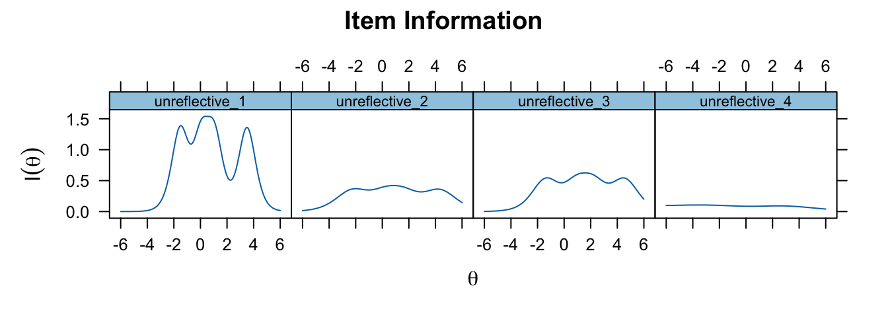
# Probabilities
# Figure 1 lower row, unreflective_1
itemplot(fit_unreflective_IRTgraded, 1, type = 'trace', main = 'unreflective_1') 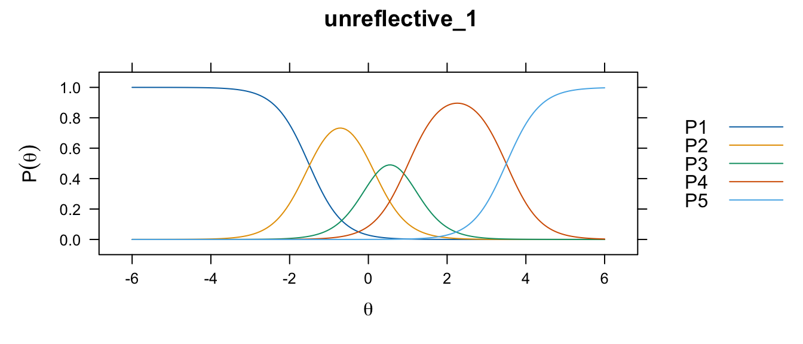
# Figure 1 lower row, unreflective_2
itemplot(fit_unreflective_IRTgraded, 2, type = 'trace', main = 'unreflective_2') 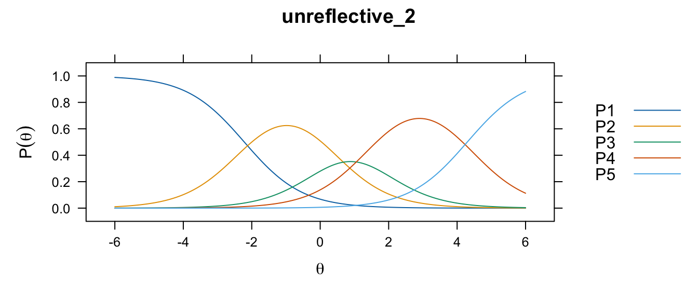
# Figure 1 lower row, unreflective_3
itemplot(fit_unreflective_IRTgraded, 3, type = 'trace', main = 'unreflective_3') 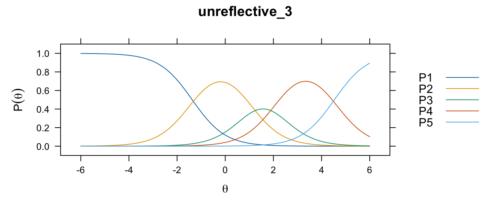
# Figure 1 lower row, unreflective_4
itemplot(fit_unreflective_IRTgraded, 4, type = 'trace', main = 'unreflective_4') 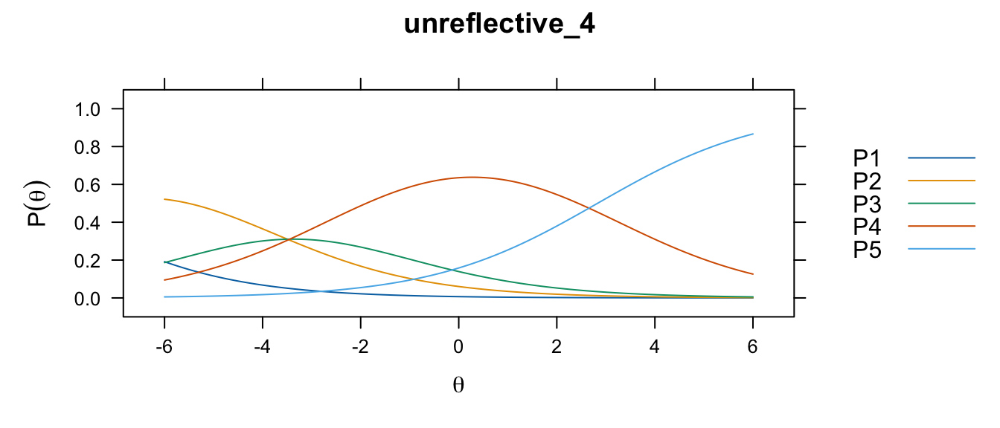
hist(raw_data['vetrepos_score']) # Figure 2A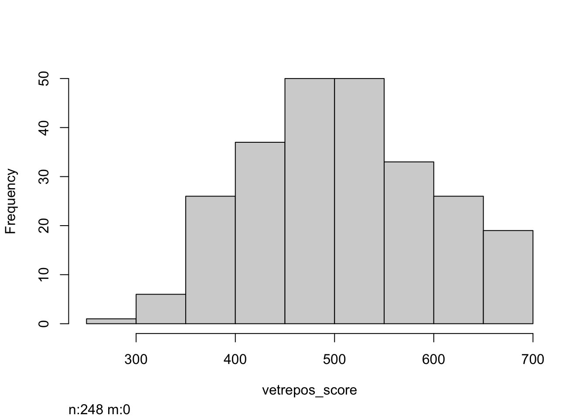
# This code chunk won't run on anonymous data.
boxplot(vetrepos_score ~ study_year, data = raw_data) # Figure 2B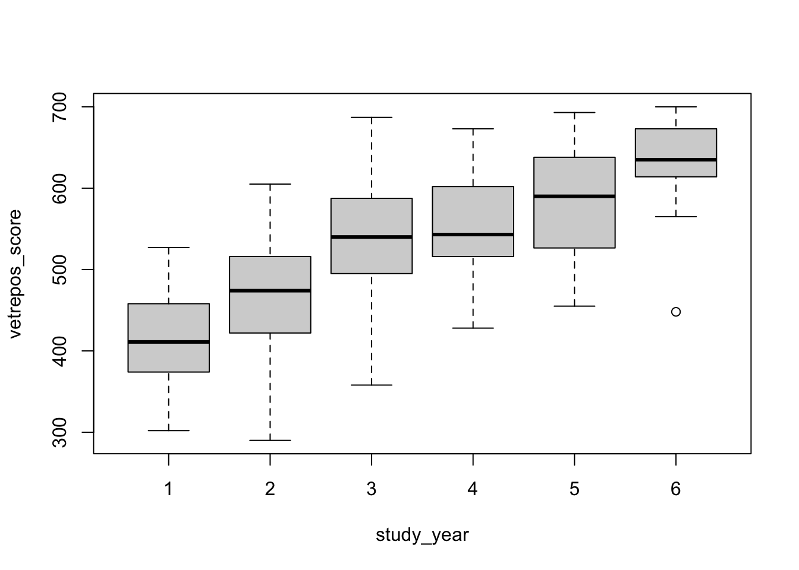
# print(kruskal.test(vetrepos_score ~ study_year, data = raw_data))
kruskal.test(vetrepos_score ~ study_year, data = raw_data)
Kruskal-Wallis rank sum test
data: vetrepos_score by study_year
Kruskal-Wallis chi-squared = 124.28, df = 5, p-value < 2.2e-16y1 <- raw_data[ raw_data$study_year == 1, 'vetrepos_score']
y2 <- raw_data[ raw_data$study_year == 2, 'vetrepos_score']
y3 <- raw_data[ raw_data$study_year == 3, 'vetrepos_score']
y4 <- raw_data[ raw_data$study_year == 4, 'vetrepos_score']
y5 <- raw_data[ raw_data$study_year == 5, 'vetrepos_score']
y6 <- raw_data[ raw_data$study_year == 6, 'vetrepos_score']
x <- c(y1, y2, y3, y4, y5, y6)
g <- factor(rep(1:6, table(raw_data$study_year)),
labels = 1:6)
dunn.test(x, g, method = 'bh') # fdr Kruskal-Wallis rank sum test
data: x and g
Kruskal-Wallis chi-squared = 124.2758, df = 5, p-value = 0
Comparison of x by g
(Benjamini-Hochberg)
Col Mean-|
Row Mean | 1 2 3 4 5
---------+-------------------------------------------------------
2 | -3.131104
| 0.0015*
|
3 | -6.698123 -4.259159
| 0.0000* 0.0000*
|
4 | -7.465930 -5.162119 -0.959320
| 0.0000* 0.0000* 0.1807
|
5 | -7.637413 -5.538093 -1.729820 -0.836484
| 0.0000* 0.0000* 0.0523 0.2014
|
6 | -7.594304 -5.865184 -2.842328 -2.102684 -1.349013
| 0.0000* 0.0000* 0.0034* 0.0242* 0.1023
alpha = 0.05
Reject Ho if p <= alpha/2Coefficients from Table S4.
# pairwise correlation coefficients
data_figure4 <- raw_data[
c(
"raw_deep",
"raw_unreflective", # items 1-3
"raw_cynicism",
"raw_exhaustion"
)
]
pairs.panels(
x = data_figure4,
method = 'sp',
digits = 2,
ci = T
) 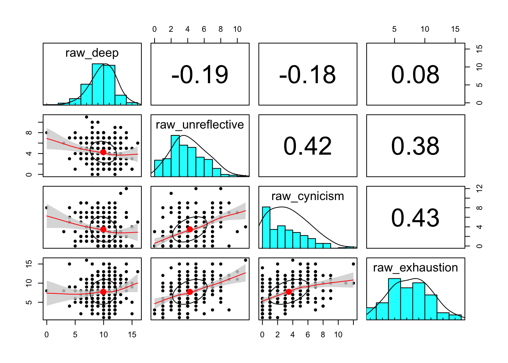
# bootstrapping confidence intervals
set.seed(1234)
cor.ci(x = data_figure4, n.iter = n_iterations2, method = "sp", plot = FALSE)Call:corCi(x = x, keys = keys, n.iter = n.iter, p = p, overlap = overlap,
poly = poly, method = method, plot = plot, minlength = minlength,
n = n)
Coefficients and bootstrapped confidence intervals
rw_dp rw_nr rw_cy rw_xh
raw_deep 1.00
raw_unreflective -0.19 1.00
raw_cynicism -0.18 0.42 1.00
raw_exhaustion 0.08 0.38 0.43 1.00
scale correlations and bootstrapped confidence intervals
lower.emp lower.norm estimate upper.norm upper.emp p
rw_dp-rw_nr -0.31 -0.31 -0.19 -0.06 -0.06 0.00
rw_dp-rw_cy -0.29 -0.30 -0.18 -0.05 -0.05 0.01
rw_dp-rw_xh -0.04 -0.04 0.08 0.21 0.20 0.18
rw_nr-rw_cy 0.30 0.30 0.42 0.53 0.53 0.00
rw_nr-rw_xh 0.26 0.27 0.38 0.49 0.49 0.00
rw_cy-rw_xh 0.33 0.32 0.43 0.54 0.54 0.00Coefficients from table S7A.
Datasets:
# unweighted dataset
res_z = lavResiduals(fit_fullSEM, type = 'raw')$cov.z
res_z = res_z[lower.tri(res_z)]
data <- data.frame(
index = 1:length(res_z),
standardized_residual_covariance = res_z
)
shapiro.test(res_z)
Shapiro-Wilk normality test
data: res_z
W = 0.98773, p-value = 0.3549The following code chunks won’t run on anonymous data.
# weighted dataset
res_z2 = lavResiduals(fit_weighted_fullSEM, type = 'raw')$cov.z
res_z2 = res_z2[lower.tri(res_z2)]
data2 <- data.frame(
index = 1:length(res_z2),
standardized_residual_covariance = res_z2
)
# down-sampled dataset
all_residuals <- list()
all_residuals_masked <- list()
for (i in 1:length(downsampled_data_standardized_residual_covariances)){
res_z3 <- downsampled_data_standardized_residual_covariances[[i]]
# all residuals
all_residuals <- append(all_residuals, res_z3[lower.tri(res_z3)])
# residual[87] between cynicism_1. and exhaustion_1 is masked
all_residuals_masked <- append(all_residuals_masked, res_z3[lower.tri(res_z3)][-87])
}
# extraction of residual[87] from the list of all_residuals
res_cyn1exh1 <- unlist(all_residuals)[seq(87, length(all_residuals), length(res_z))]
mean(res_cyn1exh1) #4.435283[1] 4.435283range(res_cyn1exh1) # 3.440235 5.287087[1] 3.440235 5.287087 2.5% 97.5%
3.803168 5.021121 # preparation of dataset for plotting
# all residuals
data3 <- data.frame(
index = 1:length(unlist(all_residuals)),
standardized_residual_covariance= unlist(all_residuals)
)
# all residuals with mask on cynicism_1~~exhaustion_1 covariance term
data4 <- data.frame(
index = 1:length(unlist(all_residuals_masked)),
standardized_residual_covariance= unlist(all_residuals_masked)
)
# prepare plots
p <- ggplot(data = data3) +
geom_density(
aes(
y = after_stat(scaled),
x = standardized_residual_covariance
),
fill = 'lightblue',
lwd = 0
) +
geom_density(
data = data4,
aes(
y = after_stat(scaled),
x = standardized_residual_covariance
),
fill = 'lightgreen',
lwd = 2,
linetype = 'dotted'
) +
geom_density(
data = data3,
aes(
y = after_stat(scaled),
x = standardized_residual_covariance,
),
lwd = 1
) +
scale_y_continuous(
name = "relative density",
sec.axis = sec_axis(
transform = ~ . * max(data$index) / 1,
name = "index",
breaks = seq(0, 120, 30)
)
) +
geom_point(
data = data2,
aes(
x = standardized_residual_covariance,
y = index / max(index)
),
color = "brown",
alpha = 0.9,
size = 3
) +
geom_point(
data = data,
aes(
x = standardized_residual_covariance,
y = index / max(index)
),
color = 'blue',
alpha = 0.85,
size = 2
) +
scale_x_continuous(limits = c(-6, 6)) +
labs(x = "standardized residual covariance") +
theme_minimal() &
theme(
text = element_text(size = 12),
axis.text = element_text(size = 12)
)
p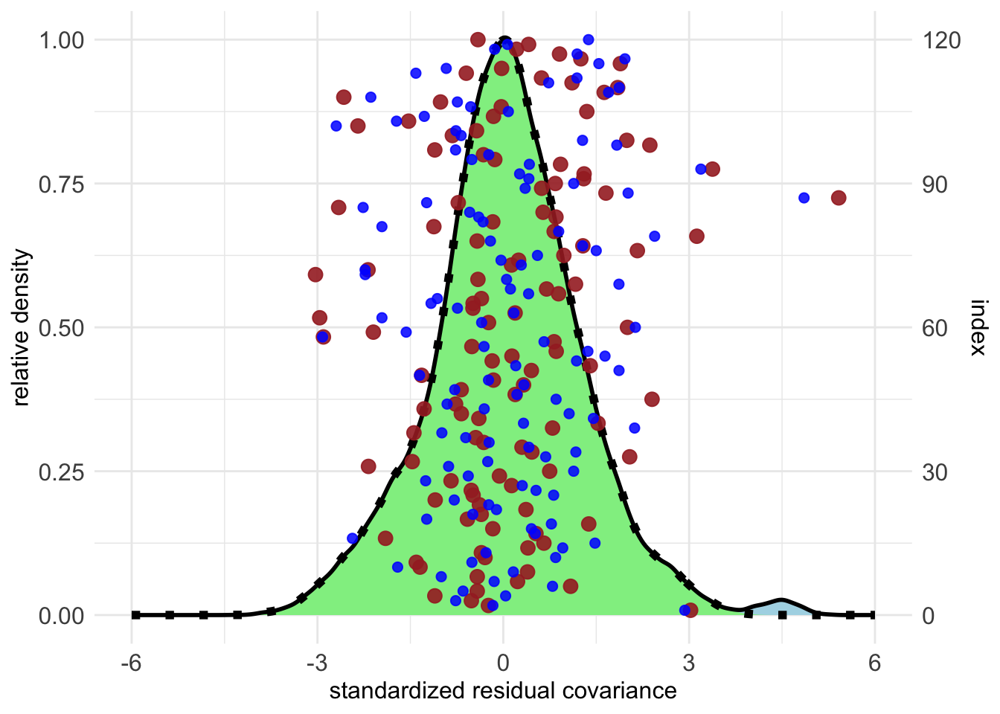
Full SE model:
Full SE model with freely estimated covariance between cynicism_1 and exhaustion_1
The following code chunk won’t run on anonymous data.
# unweighted data
data <- standardizedSolution(fit_fullSEM, output='data.frame')
# downsampled_mean_value from Table S9
data$ds_mean_value <- tableS9$mean.est.std
# weighted data
data$wt_est.std <- standardizedSolution(
fit_weighted_fullSEM,
output='data.frame'
)$est.std
# SEM with covariance term cynicism_1~~exhaustion_1
# cynicism_1 ~~ exhaustion_1 covariance term excluded to match line numbers
data$cov_est.std <- standardizedSolution(
fit_fullSEM_cov,
output='data.frame'
)$est.std[-24]
data <- subset(data, se != 0)
# preparation of the labels
estimates = list()
for (i in 1:nrow(data)){
estimates <- append(estimates, paste(c(t(data[i,1:3])), collapse = ''))
}
data$estimate <- unlist(estimates)
data[nrow(data)+1,'estimate'] <- 'factor loadings'
data[nrow(data)+1,'estimate'] <- 'variances'
data[nrow(data)+1,'estimate'] <- 'regression coefficients'
data[nrow(data)+1,'estimate'] <- 'correlation coefficients'
estimates <- '
factor loadings
f_deep=~deep_1
f_deep=~deep_2
f_deep=~deep_3
f_deep=~deep_4
f_unreflective=~unreflective_1
f_unreflective=~unreflective_2
f_unreflective=~unreflective_3
f_cynicism=~cynicism_1
f_cynicism=~cynicism_2
f_cynicism=~cynicism_3
f_exhaustion=~exhaustion_1
f_exhaustion=~exhaustion_2
f_exhaustion=~exhaustion_3
f_exhaustion=~exhaustion_4
regression coefficients
score_div100~f_deep
score_div100~study_year
score_div100~f_unreflective
score_div100~f_cynicism
score_div100~f_exhaustion
correlation coefficients
f_deep~~f_cynicism
f_deep~~f_exhaustion
f_deep~~f_unreflective
f_unreflective~~f_cynicism
f_unreflective~~f_exhaustion
f_cynicism~~f_exhaustion
variances
deep_1~~deep_1
deep_2~~deep_2
deep_3~~deep_3
deep_4~~deep_4
unreflective_1~~unreflective_1
unreflective_2~~unreflective_2
unreflective_3~~unreflective_3
cynicism_1~~cynicism_1
cynicism_2~~cynicism_2
cynicism_3~~cynicism_3
exhaustion_1~~exhaustion_1
exhaustion_2~~exhaustion_2
exhaustion_3~~exhaustion_3
exhaustion_4~~exhaustion_4
score_div100~~score_div100
'
estimates <- strsplit(x = estimates, split = "\n")[[1]]
estimates <- estimates[estimates != ""]
data$estimate <- factor(data$estimate, levels=rev(estimates))
tick_labels <- rev(data[with (data, order (estimate)), 'rhs'])
# (1:nrow(data))[is.na(tick_labels)] # 1, 16, 22, 29
tick_labels[1] <- "FACTOR LOADINGS"
tick_labels[16] <- "VETREPOS SCORE REGRESSIONS"
tick_labels[22] <- "CORRELATIONS"
tick_labels[29] <- "VARIANCES"
tick_labels[23:28] <- estimates[23:28]
tick_labels[nrow(data)] <- "score_div100"
# preparation of the plot
p1 <- ggplot(
data = data,
aes(x=estimate, xend=estimate, y=ci.lower, yend=ci.upper)
)
p2 <- p1 +
theme_minimal() +
theme(
axis.text = element_text(color = 'black', size = 12),
axis.line = element_line(color='black'),
axis.ticks = element_line(color = 'black'),
panel.grid.minor = element_blank(),
panel.grid.major.y = element_line(linetype = 'dotted', colour = 'gray'),
panel.grid.major.x = element_blank(),
panel.ontop = FALSE
) +
geom_hline(yintercept = 0, linetype = 'dashed', color = 'gray') +
geom_segment(color="darkgrey", linewidth=1) +
geom_point(aes(x=estimate, y=est.std), color = "darkgrey", size = 2) +
geom_point(aes(x=estimate, y=wt_est.std), color = "brown", shape = "I", size = 7) +
geom_point(aes(x=estimate, y=cov_est.std), color = "black", shape = "I", size = 6) +
geom_point(aes(x=estimate, y=ds_mean_value), color = "blue", shape = "I", size = 5) +
coord_flip() +
labs(y = 'standardized value', x = '') +
scale_x_discrete(label = rev(tick_labels))
p2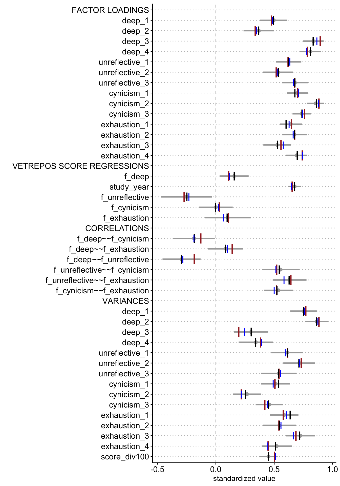
The following code chunk won’t run on anonymous data.
ydims = c(-2,2.2)
layout(
mat = matrix(c(1,2,3,4), nrow = 1),
widths = c(1,1,1,1),
heights = c(1.5,1.5,1.5,1.5),
respect = TRUE
)
boxplot(
f_deep ~ study_year,
complete_data, ylab = 'latent_trait_level',
main='Deep approach',
ylim=ydims
)
boxplot(
f_unreflective ~ study_year,
complete_data, ylab = 'latent_trait_level',
main='Unreflective approach',
ylim=ydims
)
boxplot(
f_cynicism ~ study_year,
complete_data,
ylab = 'latent_trait_level',
main='Cynicism',
ylim=ydims
)
boxplot(
f_exhaustion ~ study_year,
complete_data,
ylab = 'latent_trait_level',
main='Exhaustion',
ylim=ydims
)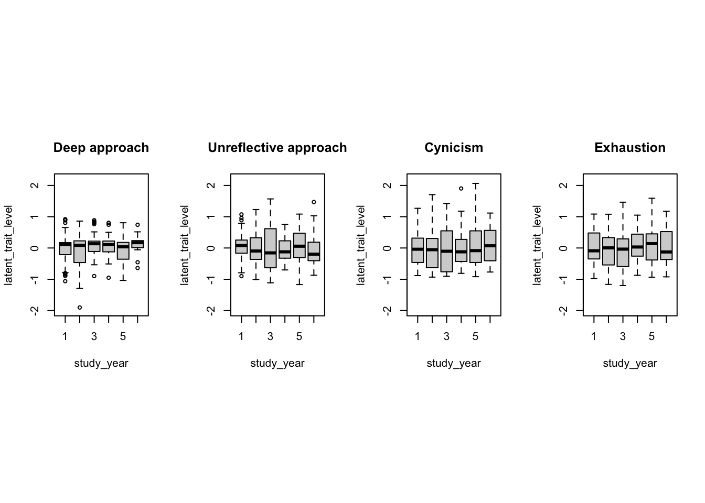
The following code chunks won’t run on anonymous data.
### statistical analysis
# Mardia test failed
mardiaKurtosis(complete_data[c("f_deep", "f_unreflective", "f_cynicism", "f_exhaustion")]) b2d z p
25.99481143 2.26713339 0.02338208 mardiaSkew(complete_data[c("f_deep", "f_unreflective", "f_cynicism", "f_exhaustion")]) b1d chi df p
1.828695e+00 7.558606e+01 2.000000e+01 2.174916e-08 # 1-way anova
kruskal.test(f_deep ~ study_year, complete_data) # NS
Kruskal-Wallis rank sum test
data: f_deep by study_year
Kruskal-Wallis chi-squared = 6.0169, df = 5, p-value = 0.3046kruskal.test(f_unreflective ~ study_year, complete_data) # NS
Kruskal-Wallis rank sum test
data: f_unreflective by study_year
Kruskal-Wallis chi-squared = 4.8859, df = 5, p-value = 0.43kruskal.test(f_cynicism ~ study_year, complete_data) # NS
Kruskal-Wallis rank sum test
data: f_cynicism by study_year
Kruskal-Wallis chi-squared = 1.3497, df = 5, p-value = 0.9297kruskal.test(f_exhaustion ~ study_year, complete_data) # NS
Kruskal-Wallis rank sum test
data: f_exhaustion by study_year
Kruskal-Wallis chi-squared = 2.6436, df = 5, p-value = 0.7547set.seed(1234)
pairs.panels(
lavaan_traits,
method = 'sp',
digits = 2,
rug = FALSE,
ci = TRUE
) # Figure 9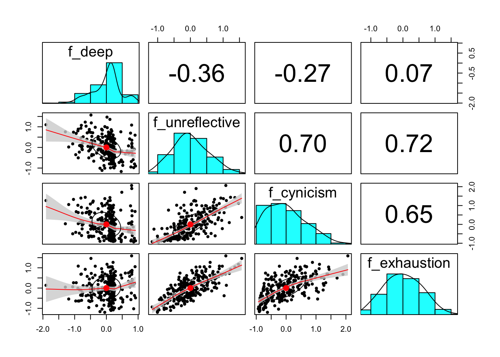
set.seed(1234)
cor.ci(
lavaan_traits,
n.iter = n_iterations2,
method = 'sp',
plot = FALSE
)Call:corCi(x = x, keys = keys, n.iter = n.iter, p = p, overlap = overlap,
poly = poly, method = method, plot = plot, minlength = minlength,
n = n)
Coefficients and bootstrapped confidence intervals
f_dep f_nrf f_cyn f_xhs
f_deep 1.00
f_unreflective -0.36 1.00
f_cynicism -0.27 0.70 1.00
f_exhaustion 0.07 0.72 0.65 1.00
scale correlations and bootstrapped confidence intervals
lower.emp lower.norm estimate upper.norm upper.emp p
f_dep-f_nrf -0.48 -0.47 -0.36 -0.24 -0.24 0.00
f_dep-f_cyn -0.38 -0.38 -0.27 -0.14 -0.14 0.00
f_dep-f_xhs -0.05 -0.05 0.07 0.20 0.20 0.25
f_nrf-f_cyn 0.61 0.61 0.70 0.77 0.77 0.00
f_nrf-f_xhs 0.65 0.65 0.72 0.78 0.78 0.00
f_cyn-f_xhs 0.56 0.55 0.65 0.72 0.72 0.00data <- cbind(
standardizedSolution(fit_fullSEM, output='data.frame'),
# covariance term is removed to match data length
standardizedSolution(fit_fullSEM_cov, output='data.frame')[-24,]
)
# estimated value of the covariance term from the output of standardizedSolution()
# lhs op rhs est.std se z pvalue ci.lower ci.upper
# 24 cynicism_1 ~~ exhaustion_1 0.308 0.064 4.847 0.000 0.184 0.433
colnames(data)[10:18] <- paste('cov.', colnames(data)[10:18], sep = '')
data <- subset(data, se != 0)
# preparation of labels
estimates = list()
for (i in 1:nrow(data)){
estimates <- append(estimates, paste(c(t(data[i,1:3])), collapse = ''))
}
data$estimate <- unlist(estimates)
data[nrow(data)+1,'estimate'] <- 'factor loadings'
data[nrow(data)+1,'estimate'] <- 'variances'
data[nrow(data)+1,'estimate'] <- 'regression coefficients'
data[nrow(data)+1,'estimate'] <- 'correlation coefficients'
estimates <- '
factor loadings
f_deep=~deep_1
f_deep=~deep_2
f_deep=~deep_3
f_deep=~deep_4
f_unreflective=~unreflective_1
f_unreflective=~unreflective_2
f_unreflective=~unreflective_3
f_cynicism=~cynicism_1
f_cynicism=~cynicism_2
f_cynicism=~cynicism_3
f_exhaustion=~exhaustion_1
f_exhaustion=~exhaustion_2
f_exhaustion=~exhaustion_3
f_exhaustion=~exhaustion_4
regression coefficients
score_div100~f_deep
score_div100~study_year
score_div100~f_unreflective
score_div100~f_cynicism
score_div100~f_exhaustion
correlation coefficients
f_deep~~f_cynicism
f_deep~~f_exhaustion
f_deep~~f_unreflective
f_unreflective~~f_cynicism
f_unreflective~~f_exhaustion
f_cynicism~~f_exhaustion
variances
deep_1~~deep_1
deep_2~~deep_2
deep_3~~deep_3
deep_4~~deep_4
unreflective_1~~unreflective_1
unreflective_2~~unreflective_2
unreflective_3~~unreflective_3
cynicism_1~~cynicism_1
cynicism_2~~cynicism_2
cynicism_3~~cynicism_3
exhaustion_1~~exhaustion_1
exhaustion_2~~exhaustion_2
exhaustion_3~~exhaustion_3
exhaustion_4~~exhaustion_4
score_div100~~score_div100
'
estimates <- strsplit(x = estimates, split = "\n")[[1]]
estimates <- estimates[estimates != ""]
data$estimate <- factor(data$estimate, levels=rev(estimates))
tick_labels <- rev(data[with (data, order (estimate)), 'rhs'])
# (1:nrow(data))[is.na(tick_labels)]
tick_labels[1] <- "FACTOR LOADINGS"
tick_labels[16] <- "VETREPOS SCORE REGRESSIONS"
tick_labels[22] <- "CORRELATIONS"
tick_labels[29] <- "VARIANCES"
tick_labels[23:28] <- estimates[23:28]
tick_labels[nrow(data)] <- "score_div100"
# preparation of the plot
p_cleveland <- ggplot(data = data) +
geom_segment(
aes(x=estimate, xend=estimate, y=ci.lower, yend=ci.upper),
color='gray',
linewidth=2
) +
geom_hline(yintercept = 0, linetype = 'dashed', color = 'gray') +
geom_point( aes(x=estimate,y=ci.lower), color="darkgrey", shape='I', size = 6) +
geom_point(aes(x=estimate, y=est.std), color = "darkgrey", shape='I', size = 8) +
geom_point(aes(x=estimate, y=ci.upper), color = "darkgrey", shape='I', size = 6) +
geom_segment(
aes(x=estimate, xend=estimate, y=cov.ci.lower, yend=cov.ci.upper),
color='red',
linewidth=1,
linetype = 'dotted'
) +
geom_point( aes(x=estimate,y=cov.ci.lower), color="red", shape='I', size = 4) +
geom_point(aes(x=estimate, y=cov.est.std), color = "red", shape='I', size = 6) +
geom_point(aes(x=estimate, y=cov.ci.upper), color = "red", shape='I', size = 4) +
coord_flip() +
theme_minimal() +
theme(
text = element_text(size = 12, color = 'black'),
axis.text = element_text(color = 'black', size = 12),
axis.line = element_line(color='black'),
axis.ticks = element_line(color = 'black'),
panel.grid.minor = element_blank(),
panel.grid.major.y = element_line(linetype = 'dotted', colour = 'gray'),
panel.grid.major.x = element_blank(),
panel.ontop = FALSE
) +
labs(y = 'standardized value', x = '' ) +
scale_x_discrete(label = rev(tick_labels))
p_cleveland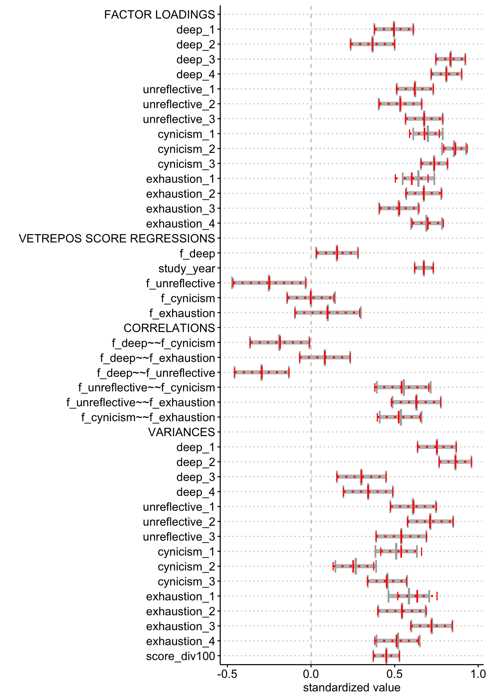
The following code chunk won’t run on anonymous data.
data <- raw_data
p1 <- ggplot(data = data) +
geom_histogram(
aes(
x = raw_deep,
fill = gender == 1,
),
position = 'identity',
alpha = 0.4,
bins = 17
) +
theme_minimal() +
theme(
text = element_text(size = 12),
axis.line = element_line(color='black'),
axis.ticks = element_line(color = 'black'),
panel.grid.minor = element_blank(),
panel.grid.major = element_blank(),
panel.ontop = TRUE
)
p2 <- ggplot(data = data) +
geom_histogram(
aes(
x = raw_unreflective,
fill = gender == 1
),
position = 'identity',
alpha = 0.4,
bins = 12
) +
theme_minimal() +
theme(
text = element_text(size = 12),
axis.line = element_line(color='black'),
axis.ticks = element_line(color = 'black'),
panel.grid.minor = element_blank(),
panel.grid.major = element_blank(),
panel.ontop = TRUE
)
p3 <- ggplot(data = data) +
geom_histogram(
aes(
x = raw_cynicism,
fill = gender == 1
),
position = 'identity',
alpha = 0.4,
bins = 13
) +
theme_minimal() +
theme(
text = element_text(size = 12),
axis.line = element_line(color='black'),
axis.ticks = element_line(color = 'black'),
panel.grid.minor = element_blank(),
panel.grid.major = element_blank(),
panel.ontop = TRUE
)
p4 <- ggplot(data = data) +
geom_histogram(
aes(
x = raw_exhaustion,
fill = gender == 1
),
position = 'identity',
alpha = 0.4,
bins = 16
) +
theme_minimal() +
theme(
text = element_text(size = 12),
axis.line = element_line(color='black'),
axis.ticks = element_line(color = 'black'),
panel.grid.minor = element_blank(),
panel.grid.major = element_blank(),
panel.ontop = TRUE
)
p_all <- (p1 | p2 ) / (p3 | p4) +
plot_annotation(
# title = 'Raw sum scores of the scales in male and female students',
tag_levels = 'A'
) +
plot_layout(guides = 'collect') &
scale_fill_manual(
name = "gender",
values = c("TRUE" = rgb(0,0,1), "FALSE" = rgb(1,0,0)),
# values = c("TRUE" = rgb(0,0,1,0.1), "FALSE" = rgb(1,0,0,0.1)),
labels = c("female", "male"),
)
p_all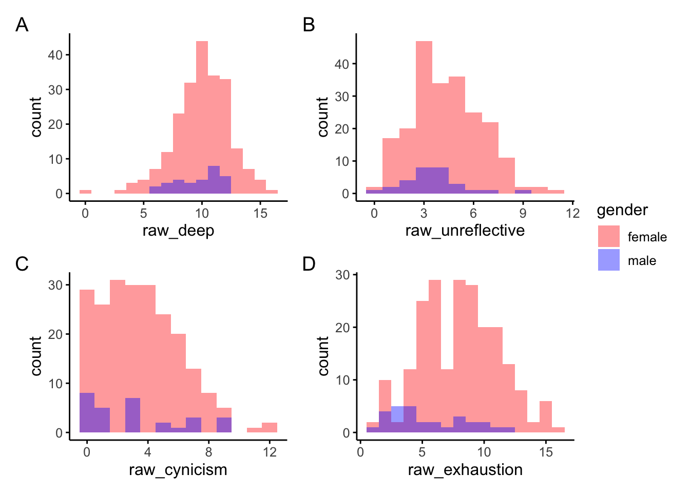
# statistical analysis with fdr adjustment for p-value (n = 4)
kruskal.test(
x = c(
subset(data, gender == 1)["raw_deep"],
subset(data, gender == 2)["raw_deep"]
)
)$p.value # NS 0.451[1] 0.4509818p.adjust(kruskal.test(
x = c(
subset(data, gender == 1)["raw_unreflective"],
subset(data, gender == 2)["raw_unreflective"]
)
)$p.value, n = 4, 'fdr') # NS = 0.1988 [1] 0.1988126kruskal.test(
x = c(
subset(data, gender == 1)["raw_cynicism"],
subset(data, gender == 2)["raw_cynicism"]
)
)$p.value # NS[1] 0.2575851kt <- kruskal.test(
x = c(
subset(data, gender == 1)["raw_exhaustion"],
subset(data, gender == 2)["raw_exhaustion"]
)
)
kt
Kruskal-Wallis rank sum test
data: c(subset(data, gender == 1)["raw_exhaustion"], subset(data, gender == 2)["raw_exhaustion"])
Kruskal-Wallis chi-squared = 14.8, df = 1, p-value = 0.0001195p.adjust(kt$p.value, n=4, 'fdr')[1] 0.0004781081